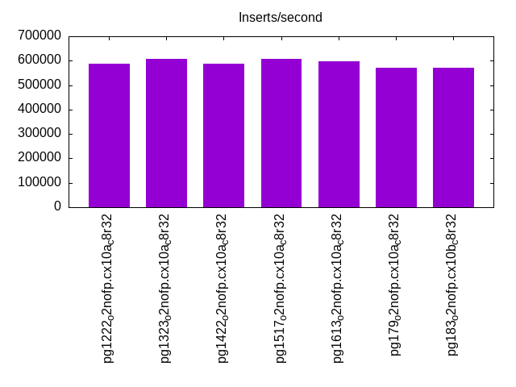
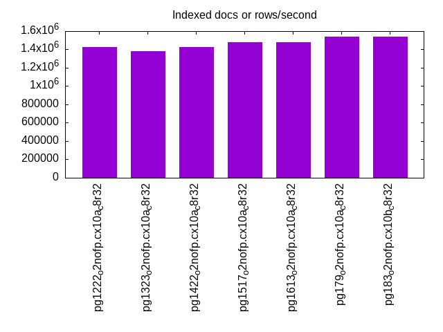
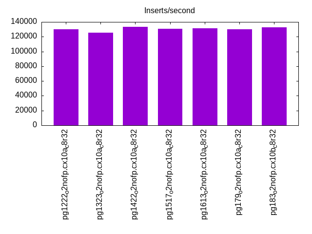
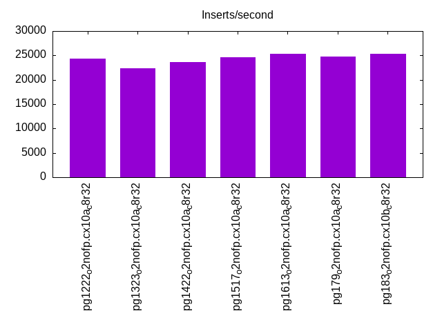
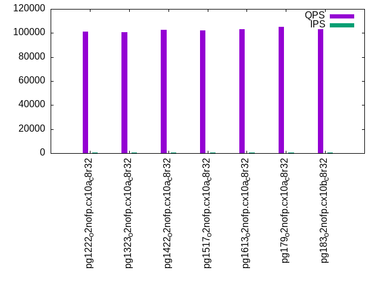
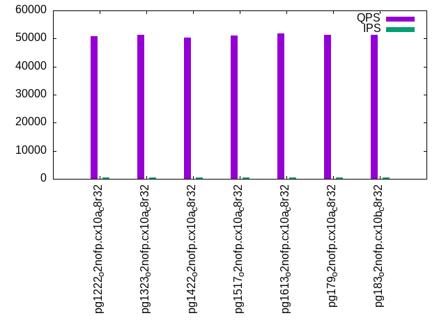
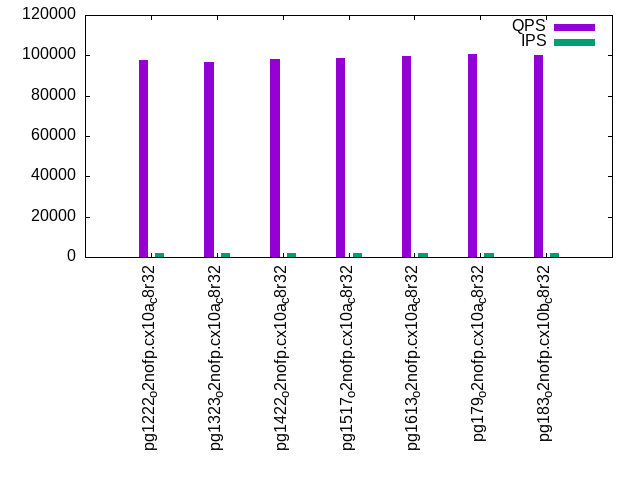
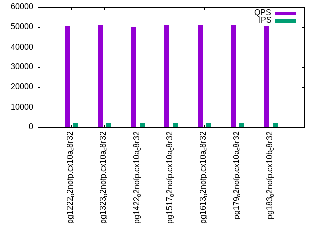
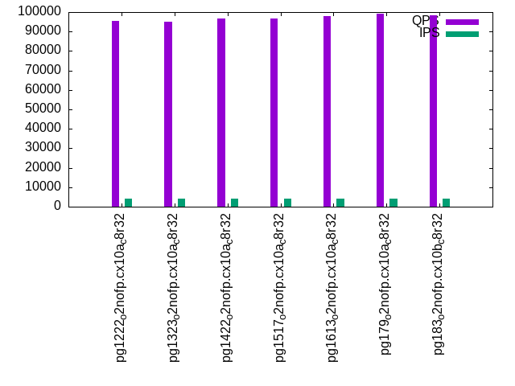
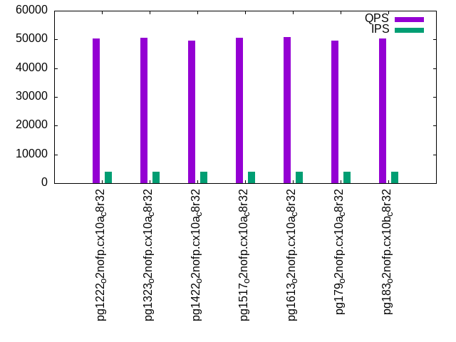

This is a report for the insert benchmark with 40M docs and 4 client(s). It is generated by scripts (bash, awk, sed) and Tufte might not be impressed. An overview of the insert benchmark is here and a short update is here. Below, by DBMS, I mean DBMS+version.config. An example is my8020.c10b40 where my means MySQL, 8020 is version 8.0.20 and c10b40 is the name for the configuration file.
The test server has 8 AMD cores, 32G RAM and an NVMe device for the database. The benchmark was run with 4 clients and there were 1 or 3 connections per client (1 for queries or inserts without rate limits, 1+1 for rate limited inserts+deletes). It uses 4 tables with a table per client. It loads 10M rows per table without secondary indexes, creates 3 secondary indexes per table, then inserts 16m+4m rows per table with a delete per insert to avoid growing the table. It then does 6 read+write tests for 1800s each that do queries as fast as possible with 100,100,500,500,1000,1000 inserts/s and the same for deletes/s per client concurrent with the queries. The database is cached by Postgres. Clients and the DBMS share one server.
The tested DBMS are:
The numbers are inserts/s for l.i0, l.i1 and l.i2, indexed docs (or rows) /s for l.x and queries/s for qr100, qp100 thru qr1000, qp1000" The values are the average rate over the entire test for inserts (IPS) and queries (QPS). The range of values for IPS and QPS is split into 3 parts: bottom 25%, middle 50%, top 25%. Values in the bottom 25% have a red background, values in the top 25% have a green background and values in the middle have no color. A gray background is used for values that can be ignored because the DBMS did not sustain the target insert rate. Red backgrounds are not used when the minimum value is within 80% of the max value.
| dbms | l.i0 | l.x | l.i1 | l.i2 | qr100 | qp100 | qr500 | qp500 | qr1000 | qp1000 |
|---|---|---|---|---|---|---|---|---|---|---|
| pg1222_o2nofp.cx10a_c8r32 | 588235 | 1428575 | 130081 | 24390 | 101056 | 50947 | 97696 | 50840 | 95571 | 50435 |
| pg1323_o2nofp.cx10a_c8r32 | 606061 | 1379314 | 125245 | 22346 | 100737 | 51234 | 96584 | 51176 | 95182 | 50667 |
| pg1422_o2nofp.cx10a_c8r32 | 588235 | 1428575 | 133612 | 23564 | 102514 | 50424 | 98269 | 50143 | 96532 | 49590 |
| pg1517_o2nofp.cx10a_c8r32 | 606061 | 1481485 | 130612 | 24578 | 102359 | 51137 | 98448 | 50958 | 96837 | 50636 |
| pg1613_o2nofp.cx10a_c8r32 | 597015 | 1481485 | 131687 | 25276 | 103167 | 51798 | 99476 | 51290 | 97852 | 50950 |
| pg179_o2nofp.cx10a_c8r32 | 571428 | 1538465 | 129817 | 24730 | 105325 | 51365 | 100836 | 50993 | 99068 | 49554 |
| pg183_o2nofp.cx10b_c8r32 | 571428 | 1538465 | 132780 | 25276 | 103250 | 51440 | 99923 | 50920 | 98416 | 50412 |
This table has relative throughput, throughput for the DBMS relative to the DBMS in the first line, using the absolute throughput from the previous table. Values less than 0.95 have a yellow background. Values greater than 1.05 have a blue background.
| dbms | l.i0 | l.x | l.i1 | l.i2 | qr100 | qp100 | qr500 | qp500 | qr1000 | qp1000 |
|---|---|---|---|---|---|---|---|---|---|---|
| pg1222_o2nofp.cx10a_c8r32 | 1.00 | 1.00 | 1.00 | 1.00 | 1.00 | 1.00 | 1.00 | 1.00 | 1.00 | 1.00 |
| pg1323_o2nofp.cx10a_c8r32 | 1.03 | 0.97 | 0.96 | 0.92 | 1.00 | 1.01 | 0.99 | 1.01 | 1.00 | 1.00 |
| pg1422_o2nofp.cx10a_c8r32 | 1.00 | 1.00 | 1.03 | 0.97 | 1.01 | 0.99 | 1.01 | 0.99 | 1.01 | 0.98 |
| pg1517_o2nofp.cx10a_c8r32 | 1.03 | 1.04 | 1.00 | 1.01 | 1.01 | 1.00 | 1.01 | 1.00 | 1.01 | 1.00 |
| pg1613_o2nofp.cx10a_c8r32 | 1.01 | 1.04 | 1.01 | 1.04 | 1.02 | 1.02 | 1.02 | 1.01 | 1.02 | 1.01 |
| pg179_o2nofp.cx10a_c8r32 | 0.97 | 1.08 | 1.00 | 1.01 | 1.04 | 1.01 | 1.03 | 1.00 | 1.04 | 0.98 |
| pg183_o2nofp.cx10b_c8r32 | 0.97 | 1.08 | 1.02 | 1.04 | 1.02 | 1.01 | 1.02 | 1.00 | 1.03 | 1.00 |
This lists the average rate of inserts/s for the tests that do inserts concurrent with queries. For such tests the query rate is listed in the table above. The read+write tests are setup so that the insert rate should match the target rate every second. Cells that are not at least 95% of the target have a red background to indicate a failure to satisfy the target.
| dbms | qr100.L1 | qp100.L2 | qr500.L3 | qp500.L4 | qr1000.L5 | qp1000.L6 |
|---|---|---|---|---|---|---|
| pg1222_o2nofp.cx10a_c8r32 | 399 | 399 | 1997 | 1997 | 3991 | 3993 |
| pg1323_o2nofp.cx10a_c8r32 | 399 | 399 | 1996 | 1997 | 3993 | 3993 |
| pg1422_o2nofp.cx10a_c8r32 | 399 | 399 | 1996 | 1997 | 3993 | 3991 |
| pg1517_o2nofp.cx10a_c8r32 | 399 | 399 | 1997 | 1996 | 3993 | 3993 |
| pg1613_o2nofp.cx10a_c8r32 | 399 | 399 | 1997 | 1996 | 3993 | 3993 |
| pg179_o2nofp.cx10a_c8r32 | 399 | 399 | 1996 | 1997 | 3993 | 3993 |
| pg183_o2nofp.cx10b_c8r32 | 399 | 399 | 1997 | 1996 | 3993 | 3993 |
| target | 400 | 400 | 2000 | 2000 | 4000 | 4000 |
l.i0: load without secondary indexes. Graphs for performance per 1-second interval are here.
Average throughput:

Insert response time histogram: each cell has the percentage of responses that take <= the time in the header and max is the max response time in seconds. For the max column values in the top 25% of the range have a red background and in the bottom 25% of the range have a green background. The red background is not used when the min value is within 80% of the max value.
| dbms | 256us | 1ms | 4ms | 16ms | 64ms | 256ms | 1s | 4s | 16s | gt | max |
|---|---|---|---|---|---|---|---|---|---|---|---|
| pg1222_o2nofp.cx10a_c8r32 | 99.431 | 0.569 | 0.001 | 0.005 | |||||||
| pg1323_o2nofp.cx10a_c8r32 | 99.462 | 0.536 | 0.001 | 0.005 | |||||||
| pg1422_o2nofp.cx10a_c8r32 | 99.459 | 0.541 | 0.004 | ||||||||
| pg1517_o2nofp.cx10a_c8r32 | 99.480 | 0.520 | 0.001 | 0.005 | |||||||
| pg1613_o2nofp.cx10a_c8r32 | 99.444 | 0.556 | 0.001 | 0.004 | |||||||
| pg179_o2nofp.cx10a_c8r32 | 97.680 | 2.317 | 0.003 | 0.005 | |||||||
| pg183_o2nofp.cx10b_c8r32 | 97.688 | 2.308 | 0.003 | 0.010 |
Performance metrics for the DBMS listed above. Some are normalized by throughput, others are not. Legend for results is here.
ips qps rps rmbps wps wmbps rpq rkbpq wpi wkbpi csps cpups cspq cpupq dbgb1 dbgb2 rss maxop p50 p99 tag 588235 0 1 0.0 2116.0 242.0 0.000 0.000 0.004 0.421 52269 65.1 0.089 9 3.8 10.4 2.8 0.005 177882 172983 pg1222_o2nofp.cx10a_c8r32 606061 0 1 0.0 2159.1 246.3 0.000 0.000 0.004 0.416 52561 65.1 0.087 9 3.8 10.4 0.4 0.005 181782 175206 pg1323_o2nofp.cx10a_c8r32 588235 0 1 0.0 2086.3 237.5 0.000 0.000 0.004 0.413 51938 65.2 0.088 9 3.8 10.4 0.4 0.004 177378 170883 pg1422_o2nofp.cx10a_c8r32 606061 0 1 0.0 2116.8 241.6 0.000 0.000 0.003 0.408 52079 65.1 0.086 9 3.8 10.4 0.4 0.005 182873 176842 pg1517_o2nofp.cx10a_c8r32 597015 0 1 0.0 2109.8 240.9 0.000 0.000 0.004 0.413 51535 65.0 0.086 9 3.8 10.4 0.3 0.004 181078 175990 pg1613_o2nofp.cx10a_c8r32 571428 0 1 0.0 2008.5 228.9 0.000 0.000 0.004 0.410 51944 59.1 0.091 8 3.8 10.4 0.3 0.005 170780 153185 pg179_o2nofp.cx10a_c8r32 571428 0 1 0.0 1998.2 227.7 0.000 0.000 0.003 0.408 51845 59.4 0.091 8 3.8 10.4 0.3 0.010 170470 149485 pg183_o2nofp.cx10b_c8r32
Average values from iostat.
r/s rkB/s rrqm/s %rrqm r_await rareq-s w/s wkB/s wrqm/s %wrqm w_await wareq-s d/s dkB/s drqm/s %drqm d_await dareq-s f/s f_await aqu-sz %util 1.033 4.133 0.000 0.000 0.165 3.333 2244.0 263003 179.2 7.913 0.500 116.5 3.400 27.27 0.000 0.000 1.123 6.507 112.3 1.650 1.472 32.33 pg1222_o2nofp.cx10a_c8r32 0.950 3.800 0.000 0.000 0.187 4.000 2289.9 267711 165.1 7.182 0.434 116.2 3.517 75.40 0.000 0.000 0.698 12.94 116.0 1.158 1.223 27.06 pg1323_o2nofp.cx10a_c8r32 0.700 2.800 0.000 0.000 0.101 3.333 2211.6 257996 140.7 6.482 0.427 115.9 3.767 26.53 0.000 0.000 0.660 5.841 116.4 1.240 1.175 27.96 pg1422_o2nofp.cx10a_c8r32 1.183 4.733 0.000 0.000 0.104 4.000 2246.0 262707 177.3 7.647 0.438 116.4 0.500 126.9 0.000 0.000 0.443 62.19 116.2 1.412 1.192 29.49 pg1517_o2nofp.cx10a_c8r32 0.967 3.867 0.000 0.000 0.152 3.667 2238.6 261934 178.1 7.710 0.442 116.4 0.583 26.67 0.000 0.000 0.452 15.41 114.9 1.572 1.250 31.70 pg1613_o2nofp.cx10a_c8r32 1.000 4.000 0.000 0.000 0.113 3.692 2117.0 247264 146.5 6.860 0.496 116.1 0.538 9.600 0.000 0.000 0.632 6.015 109.5 1.294 1.314 26.59 pg179_o2nofp.cx10a_c8r32 0.923 3.692 0.000 0.000 0.102 4.000 2106.2 245937 129.3 6.075 0.452 116.3 0.492 7.508 0.000 0.000 0.823 10.46 108.4 1.600 1.142 29.73 pg183_o2nofp.cx10b_c8r32
l.x: create secondary indexes.
Average throughput:

Performance metrics for the DBMS listed above. Some are normalized by throughput, others are not. Legend for results is here.
ips qps rps rmbps wps wmbps rpq rkbpq wpi wkbpi csps cpups cspq cpupq dbgb1 dbgb2 rss maxop p50 p99 tag 1428575 0 2 0.0 3271.4 400.5 0.000 0.000 0.002 0.287 7992 34.2 0.006 2 7.7 17.7 0.0 0.002 NA NA pg1222_o2nofp.cx10a_c8r32 1379314 0 1 0.0 3431.8 420.5 0.000 0.000 0.002 0.312 7327 34.5 0.005 2 7.7 17.8 0.0 0.002 NA NA pg1323_o2nofp.cx10a_c8r32 1428575 0 1 0.0 3153.0 386.2 0.000 0.000 0.002 0.277 7554 35.3 0.005 2 7.7 17.8 0.0 0.002 NA NA pg1422_o2nofp.cx10a_c8r32 1481485 0 2 0.0 3369.8 412.6 0.000 0.000 0.002 0.285 8289 33.7 0.006 2 7.7 17.8 0.0 0.002 NA NA pg1517_o2nofp.cx10a_c8r32 1481485 0 2 0.0 3409.4 417.3 0.000 0.000 0.002 0.288 8396 33.8 0.006 2 7.7 17.8 0.0 0.002 NA NA pg1613_o2nofp.cx10a_c8r32 1538465 0 2 0.0 4027.6 493.8 0.000 0.000 0.003 0.329 7877 33.7 0.005 2 7.7 17.7 3.1 0.002 NA NA pg179_o2nofp.cx10a_c8r32 1538465 0 2 0.0 4121.4 505.2 0.000 0.000 0.003 0.336 8006 34.0 0.005 2 7.7 17.7 0.0 0.002 NA NA pg183_o2nofp.cx10b_c8r32
Average values from iostat.
r/s rkB/s rrqm/s %rrqm r_await rareq-s w/s wkB/s wrqm/s %wrqm w_await wareq-s d/s dkB/s drqm/s %drqm d_await dareq-s f/s f_await aqu-sz %util 1.850 7.400 0.000 0.000 0.075 4.000 4087.7 512616 143.6 3.478 0.833 125.5 3.800 67.80 0.000 0.000 1.077 17.81 43.15 1.238 3.448 24.25 pg1222_o2nofp.cx10a_c8r32 1.450 5.800 0.000 0.000 0.218 4.000 4286.2 538197 141.0 3.292 0.965 125.7 7.750 53414.2 0.000 0.000 1.133 5340.9 39.80 1.443 4.430 24.38 pg1323_o2nofp.cx10a_c8r32 1.300 5.200 0.000 0.000 2.090 4.000 3930.2 493366 139.8 3.475 1.100 125.6 5.200 51.60 0.000 0.000 0.777 10.37 40.00 1.000 4.237 21.23 pg1422_o2nofp.cx10a_c8r32 2.900 11.60 0.000 0.000 0.315 4.000 4211.2 528059 147.6 3.428 0.905 125.4 2.200 5822.4 0.000 0.000 1.050 2645.2 44.10 1.265 3.800 24.64 pg1517_o2nofp.cx10a_c8r32 2.050 8.200 0.000 0.000 0.110 4.000 4075.9 511645 144.2 3.430 0.908 125.5 2.350 9874.4 0.000 0.000 0.580 2608.2 44.40 1.010 3.850 22.73 pg1613_o2nofp.cx10a_c8r32 2.850 11.40 0.000 0.000 0.265 4.000 5024.1 631250 155.2 3.115 1.067 125.6 4.950 62685.0 0.000 0.000 2.442 9978.5 45.20 1.600 5.695 28.13 pg179_o2nofp.cx10a_c8r32 1.900 7.600 0.000 0.000 0.150 4.000 4948.4 621889 158.7 3.268 0.955 125.5 4.350 68118.0 0.000 0.000 1.280 8583.0 46.35 1.067 4.933 24.94 pg183_o2nofp.cx10b_c8r32
l.i1: continue load after secondary indexes created with 50 inserts per transaction. Graphs for performance per 1-second interval are here.
Average throughput:

Insert response time histogram: each cell has the percentage of responses that take <= the time in the header and max is the max response time in seconds. For the max column values in the top 25% of the range have a red background and in the bottom 25% of the range have a green background. The red background is not used when the min value is within 80% of the max value.
| dbms | 256us | 1ms | 4ms | 16ms | 64ms | 256ms | 1s | 4s | 16s | gt | max |
|---|---|---|---|---|---|---|---|---|---|---|---|
| pg1222_o2nofp.cx10a_c8r32 | 55.277 | 44.478 | 0.213 | 0.032 | 0.050 | ||||||
| pg1323_o2nofp.cx10a_c8r32 | 59.419 | 40.340 | 0.206 | 0.035 | 0.059 | ||||||
| pg1422_o2nofp.cx10a_c8r32 | 67.937 | 31.899 | 0.124 | 0.040 | nonzero | 0.080 | |||||
| pg1517_o2nofp.cx10a_c8r32 | 60.616 | 39.203 | 0.160 | 0.021 | 0.058 | ||||||
| pg1613_o2nofp.cx10a_c8r32 | 60.230 | 39.572 | 0.163 | 0.035 | 0.063 | ||||||
| pg179_o2nofp.cx10a_c8r32 | 70.562 | 29.305 | 0.089 | 0.043 | nonzero | 0.092 | |||||
| pg183_o2nofp.cx10b_c8r32 | 67.789 | 32.097 | 0.078 | 0.037 | 0.052 |
Delete response time histogram: each cell has the percentage of responses that take <= the time in the header and max is the max response time in seconds. For the max column values in the top 25% of the range have a red background and in the bottom 25% of the range have a green background. The red background is not used when the min value is within 80% of the max value.
| dbms | 256us | 1ms | 4ms | 16ms | 64ms | 256ms | 1s | 4s | 16s | gt | max |
|---|---|---|---|---|---|---|---|---|---|---|---|
| pg1222_o2nofp.cx10a_c8r32 | 0.003 | 39.702 | 59.617 | 0.642 | 0.036 | 0.051 | |||||
| pg1323_o2nofp.cx10a_c8r32 | 0.002 | 38.214 | 60.562 | 1.183 | 0.038 | nonzero | 0.074 | ||||
| pg1422_o2nofp.cx10a_c8r32 | 0.002 | 42.284 | 57.334 | 0.340 | 0.041 | 0.049 | |||||
| pg1517_o2nofp.cx10a_c8r32 | 0.003 | 37.693 | 62.143 | 0.133 | 0.028 | 0.049 | |||||
| pg1613_o2nofp.cx10a_c8r32 | 0.002 | 39.668 | 60.003 | 0.286 | 0.041 | 0.055 | |||||
| pg179_o2nofp.cx10a_c8r32 | 0.012 | 39.235 | 60.568 | 0.141 | 0.045 | nonzero | 0.075 | ||||
| pg183_o2nofp.cx10b_c8r32 | 0.003 | 41.761 | 58.060 | 0.133 | 0.042 | 0.056 |
Performance metrics for the DBMS listed above. Some are normalized by throughput, others are not. Legend for results is here.
ips qps rps rmbps wps wmbps rpq rkbpq wpi wkbpi csps cpups cspq cpupq dbgb1 dbgb2 rss maxop p50 p99 tag 130081 0 0 0.0 1765.5 187.8 0.000 0.000 0.014 1.478 38340 88.1 0.295 54 11.3 51.3 7.9 0.050 31897 13389 pg1222_o2nofp.cx10a_c8r32 125245 0 0 0.0 1700.2 180.3 0.000 0.000 0.014 1.474 37935 86.3 0.303 55 11.3 51.4 6.2 0.059 30247 8647 pg1323_o2nofp.cx10a_c8r32 133612 0 1 0.0 1796.2 190.1 0.000 0.000 0.013 1.457 40151 85.6 0.301 51 10.9 50.9 8.8 0.080 31946 14345 pg1422_o2nofp.cx10a_c8r32 130612 0 1 0.0 1750.7 184.9 0.000 0.000 0.013 1.449 39819 84.3 0.305 52 10.9 50.9 6.3 0.058 30547 12798 pg1517_o2nofp.cx10a_c8r32 131687 0 0 0.0 1771.2 186.8 0.000 0.000 0.013 1.453 39708 85.1 0.302 52 10.9 50.9 6.8 0.063 30397 13949 pg1613_o2nofp.cx10a_c8r32 129817 0 0 0.0 1653.3 185.1 0.000 0.000 0.013 1.460 37275 82.1 0.287 51 10.8 50.8 2.0 0.092 29447 18548 pg179_o2nofp.cx10a_c8r32 132780 0 0 0.0 1752.1 192.7 0.000 0.000 0.013 1.486 37474 83.6 0.282 50 10.8 50.9 2.5 0.052 30847 14696 pg183_o2nofp.cx10b_c8r32
Average values from iostat.
r/s rkB/s rrqm/s %rrqm r_await rareq-s w/s wkB/s wrqm/s %wrqm w_await wareq-s d/s dkB/s drqm/s %drqm d_await dareq-s f/s f_await aqu-sz %util 0.507 2.342 0.000 0.000 0.156 3.114 1772.4 192939 136.0 7.237 0.409 107.9 2.987 314.1 0.000 0.000 0.991 73.43 129.1 1.575 0.924 31.94 pg1222_o2nofp.cx10a_c8r32 0.451 2.431 0.000 0.000 0.125 2.970 1706.3 185234 110.3 6.058 0.398 107.6 2.982 114.4 0.000 0.000 0.958 17.40 125.2 1.528 0.866 29.99 pg1323_o2nofp.cx10a_c8r32 0.600 3.038 0.000 0.000 0.137 3.387 1804.0 195387 130.0 6.712 0.388 107.4 3.008 119.1 0.000 0.000 0.918 28.23 135.1 1.464 0.894 31.21 pg1422_o2nofp.cx10a_c8r32 0.559 2.235 0.000 0.000 0.144 3.093 1757.9 190007 108.0 5.703 0.395 107.4 0.124 298.8 0.000 0.000 0.076 152.6 134.4 1.505 0.893 31.14 pg1517_o2nofp.cx10a_c8r32 0.502 2.008 0.000 0.000 0.157 3.000 1778.3 192001 105.7 5.496 0.383 107.4 0.123 158.4 0.000 0.000 0.067 86.50 135.8 1.430 0.876 30.66 pg1613_o2nofp.cx10a_c8r32 0.460 1.839 0.000 0.000 0.099 3.052 1659.5 190255 100.6 5.915 0.377 113.4 0.105 210.9 0.000 0.000 0.079 205.3 96.56 1.478 0.780 25.23 pg179_o2nofp.cx10a_c8r32 0.415 1.659 0.000 0.000 0.150 2.821 1759.4 198142 104.4 5.654 0.397 111.3 0.145 421.2 0.000 0.000 0.149 816.8 113.8 1.428 0.859 27.63 pg183_o2nofp.cx10b_c8r32
l.i2: continue load after secondary indexes created with 5 inserts per transaction. Graphs for performance per 1-second interval are here.
Average throughput:

Insert response time histogram: each cell has the percentage of responses that take <= the time in the header and max is the max response time in seconds. For the max column values in the top 25% of the range have a red background and in the bottom 25% of the range have a green background. The red background is not used when the min value is within 80% of the max value.
| dbms | 256us | 1ms | 4ms | 16ms | 64ms | 256ms | 1s | 4s | 16s | gt | max |
|---|---|---|---|---|---|---|---|---|---|---|---|
| pg1222_o2nofp.cx10a_c8r32 | 85.578 | 14.295 | 0.122 | 0.005 | 0.010 | ||||||
| pg1323_o2nofp.cx10a_c8r32 | 88.028 | 11.870 | 0.099 | 0.003 | nonzero | 0.035 | |||||
| pg1422_o2nofp.cx10a_c8r32 | 93.364 | 6.585 | 0.050 | nonzero | nonzero | 0.019 | |||||
| pg1517_o2nofp.cx10a_c8r32 | 93.193 | 6.761 | 0.045 | nonzero | 0.005 | ||||||
| pg1613_o2nofp.cx10a_c8r32 | 92.070 | 7.874 | 0.056 | nonzero | nonzero | 0.016 | |||||
| pg179_o2nofp.cx10a_c8r32 | 96.862 | 3.118 | 0.020 | nonzero | 0.015 | ||||||
| pg183_o2nofp.cx10b_c8r32 | 97.588 | 2.392 | 0.021 | nonzero | 0.015 |
Delete response time histogram: each cell has the percentage of responses that take <= the time in the header and max is the max response time in seconds. For the max column values in the top 25% of the range have a red background and in the bottom 25% of the range have a green background. The red background is not used when the min value is within 80% of the max value.
| dbms | 256us | 1ms | 4ms | 16ms | 64ms | 256ms | 1s | 4s | 16s | gt | max |
|---|---|---|---|---|---|---|---|---|---|---|---|
| pg1222_o2nofp.cx10a_c8r32 | 9.395 | 57.549 | 33.045 | 0.011 | 0.010 | ||||||
| pg1323_o2nofp.cx10a_c8r32 | 7.519 | 63.871 | 28.599 | 0.011 | nonzero | 0.035 | |||||
| pg1422_o2nofp.cx10a_c8r32 | 8.666 | 56.417 | 34.917 | 0.001 | nonzero | 0.019 | |||||
| pg1517_o2nofp.cx10a_c8r32 | 7.844 | 62.336 | 29.818 | 0.001 | 0.009 | ||||||
| pg1613_o2nofp.cx10a_c8r32 | 6.558 | 68.198 | 25.243 | 0.001 | nonzero | 0.017 | |||||
| pg179_o2nofp.cx10a_c8r32 | 6.708 | 64.020 | 29.272 | 0.001 | 0.016 | ||||||
| pg183_o2nofp.cx10b_c8r32 | 7.421 | 61.396 | 31.183 | 0.001 | 0.015 |
Performance metrics for the DBMS listed above. Some are normalized by throughput, others are not. Legend for results is here.
ips qps rps rmbps wps wmbps rpq rkbpq wpi wkbpi csps cpups cspq cpupq dbgb1 dbgb2 rss maxop p50 p99 tag 24390 0 0 0.0 225.2 23.1 0.000 0.000 0.009 0.970 90647 67.1 3.717 220 11.4 51.4 9.1 0.010 4280 2775 pg1222_o2nofp.cx10a_c8r32 22346 0 0 0.0 207.5 21.3 0.000 0.000 0.009 0.974 87514 64.5 3.916 231 11.3 51.4 4.5 0.035 5264 1925 pg1323_o2nofp.cx10a_c8r32 23564 0 0 0.0 216.1 22.0 0.000 0.000 0.009 0.958 94209 64.5 3.998 219 10.9 51.0 4.5 0.019 3955 2515 pg1422_o2nofp.cx10a_c8r32 24578 0 0 0.0 222.0 23.0 0.000 0.000 0.009 0.958 96883 65.8 3.942 214 10.9 51.0 5.7 0.005 4375 3115 pg1517_o2nofp.cx10a_c8r32 25276 0 0 0.0 227.9 23.6 0.000 0.000 0.009 0.955 98064 66.6 3.880 211 10.9 51.0 3.6 0.016 5214 3309 pg1613_o2nofp.cx10a_c8r32 24730 0 0 0.0 218.1 23.0 0.000 0.000 0.009 0.954 86617 64.6 3.503 209 10.9 51.0 8.4 0.015 5339 3230 pg179_o2nofp.cx10a_c8r32 25276 0 0 0.0 226.6 23.7 0.000 0.000 0.009 0.960 88753 65.3 3.511 207 10.9 51.0 6.5 0.015 4475 3150 pg183_o2nofp.cx10b_c8r32
Average values from iostat.
r/s rkB/s rrqm/s %rrqm r_await rareq-s w/s wkB/s wrqm/s %wrqm w_await wareq-s d/s dkB/s drqm/s %drqm d_await dareq-s f/s f_await aqu-sz %util 0.002 0.006 0.000 0.000 0.000 0.031 225.3 23661.1 21.27 5.498 0.252 108.1 2.417 51.53 0.000 0.000 0.627 7.134 23.22 1.467 0.098 5.531 pg1222_o2nofp.cx10a_c8r32 0.000 0.000 0.000 0.000 0.000 0.000 207.4 21739.2 18.46 5.081 0.277 106.7 2.406 148.6 0.000 0.000 0.629 34.76 21.23 1.533 0.090 5.114 pg1323_o2nofp.cx10a_c8r32 0.001 0.006 0.000 0.000 0.007 0.030 215.5 22480.0 18.42 4.713 0.258 106.9 2.400 57.71 0.000 0.000 0.638 10.07 22.41 1.498 0.095 5.326 pg1422_o2nofp.cx10a_c8r32 0.000 0.000 0.000 0.000 0.000 0.000 222.1 23541.9 17.09 3.530 0.242 109.3 0.157 39.75 0.000 0.000 0.010 4.279 23.39 1.363 0.091 5.189 pg1517_o2nofp.cx10a_c8r32 0.000 0.000 0.000 0.000 0.000 0.000 226.9 24009.4 17.59 4.014 0.267 108.9 0.165 41.07 0.000 0.000 0.019 2.592 23.83 1.440 0.103 5.760 pg1613_o2nofp.cx10a_c8r32 0.002 0.006 0.000 0.000 0.000 0.031 216.6 23413.0 9.188 2.468 0.226 109.1 0.002 1.800 0.000 0.000 0.008 9.000 19.89 1.379 0.082 4.213 pg179_o2nofp.cx10a_c8r32 0.003 0.013 0.000 0.000 0.000 0.064 224.8 24046.7 12.90 2.516 0.224 108.9 0.112 31.71 0.000 0.000 0.003 21.28 22.07 1.428 0.090 4.674 pg183_o2nofp.cx10b_c8r32
qr100.L1: range queries with 100 insert/s per client. Graphs for performance per 1-second interval are here.
Average throughput:

Query response time histogram: each cell has the percentage of responses that take <= the time in the header and max is the max response time in seconds. For max values in the top 25% of the range have a red background and in the bottom 25% of the range have a green background. The red background is not used when the min value is within 80% of the max value.
| dbms | 256us | 1ms | 4ms | 16ms | 64ms | 256ms | 1s | 4s | 16s | gt | max |
|---|---|---|---|---|---|---|---|---|---|---|---|
| pg1222_o2nofp.cx10a_c8r32 | 99.994 | 0.006 | nonzero | 0.002 | |||||||
| pg1323_o2nofp.cx10a_c8r32 | 99.996 | 0.004 | nonzero | 0.002 | |||||||
| pg1422_o2nofp.cx10a_c8r32 | 99.994 | 0.006 | nonzero | 0.002 | |||||||
| pg1517_o2nofp.cx10a_c8r32 | 99.993 | 0.007 | nonzero | 0.001 | |||||||
| pg1613_o2nofp.cx10a_c8r32 | 99.993 | 0.007 | nonzero | 0.001 | |||||||
| pg179_o2nofp.cx10a_c8r32 | 99.993 | 0.007 | nonzero | 0.001 | |||||||
| pg183_o2nofp.cx10b_c8r32 | 99.994 | 0.006 | nonzero | 0.001 |
Insert response time histogram: each cell has the percentage of responses that take <= the time in the header and max is the max response time in seconds. For max values in the top 25% of the range have a red background and in the bottom 25% of the range have a green background. The red background is not used when the min value is within 80% of the max value.
| dbms | 256us | 1ms | 4ms | 16ms | 64ms | 256ms | 1s | 4s | 16s | gt | max |
|---|---|---|---|---|---|---|---|---|---|---|---|
| pg1222_o2nofp.cx10a_c8r32 | 58.639 | 41.333 | 0.028 | 0.005 | |||||||
| pg1323_o2nofp.cx10a_c8r32 | 55.826 | 44.139 | 0.035 | 0.005 | |||||||
| pg1422_o2nofp.cx10a_c8r32 | 66.965 | 33.000 | 0.035 | 0.005 | |||||||
| pg1517_o2nofp.cx10a_c8r32 | 61.021 | 38.938 | 0.042 | 0.005 | |||||||
| pg1613_o2nofp.cx10a_c8r32 | 62.375 | 37.590 | 0.035 | 0.005 | |||||||
| pg179_o2nofp.cx10a_c8r32 | 73.757 | 26.208 | 0.035 | 0.005 | |||||||
| pg183_o2nofp.cx10b_c8r32 | 73.681 | 26.292 | 0.028 | 0.005 |
Delete response time histogram: each cell has the percentage of responses that take <= the time in the header and max is the max response time in seconds. For max values in the top 25% of the range have a red background and in the bottom 25% of the range have a green background. The red background is not used when the min value is within 80% of the max value.
| dbms | 256us | 1ms | 4ms | 16ms | 64ms | 256ms | 1s | 4s | 16s | gt | max |
|---|---|---|---|---|---|---|---|---|---|---|---|
| pg1222_o2nofp.cx10a_c8r32 | 99.035 | 0.965 | 0.003 | ||||||||
| pg1323_o2nofp.cx10a_c8r32 | 99.174 | 0.826 | 0.002 | ||||||||
| pg1422_o2nofp.cx10a_c8r32 | 0.021 | 99.042 | 0.938 | 0.002 | |||||||
| pg1517_o2nofp.cx10a_c8r32 | 0.007 | 98.965 | 1.028 | 0.002 | |||||||
| pg1613_o2nofp.cx10a_c8r32 | 0.007 | 98.847 | 1.146 | 0.002 | |||||||
| pg179_o2nofp.cx10a_c8r32 | 0.028 | 98.007 | 1.965 | 0.002 | |||||||
| pg183_o2nofp.cx10b_c8r32 | 98.410 | 1.590 | 0.002 |
Performance metrics for the DBMS listed above. Some are normalized by throughput, others are not. Legend for results is here.
ips qps rps rmbps wps wmbps rpq rkbpq wpi wkbpi csps cpups cspq cpupq dbgb1 dbgb2 rss maxop p50 p99 tag 399 101056 0 0.0 23.9 1.7 0.000 0.000 0.060 4.450 385553 41.1 3.815 33 11.4 51.4 2.7 0.002 25133 24701 pg1222_o2nofp.cx10a_c8r32 399 100737 0 0.0 23.9 1.7 0.000 0.000 0.060 4.439 384284 41.1 3.815 33 11.3 51.4 0.3 0.002 25101 24653 pg1323_o2nofp.cx10a_c8r32 399 102514 0 0.0 24.0 1.7 0.000 0.000 0.060 4.465 391039 41.1 3.814 32 10.9 51.0 0.2 0.002 25805 25357 pg1422_o2nofp.cx10a_c8r32 399 102359 0 0.0 21.9 1.7 0.000 0.000 0.055 4.411 390608 40.6 3.816 32 10.9 51.0 0.2 0.001 25581 25085 pg1517_o2nofp.cx10a_c8r32 399 103167 0 0.0 21.9 1.7 0.000 0.000 0.055 4.415 393712 40.7 3.816 32 10.9 51.0 0.2 0.001 25821 25166 pg1613_o2nofp.cx10a_c8r32 399 105325 0 0.0 21.8 1.7 0.000 0.000 0.055 4.420 401706 40.9 3.814 31 10.9 51.0 0.2 0.001 26301 25741 pg179_o2nofp.cx10a_c8r32 399 103250 0 0.0 21.5 1.7 0.000 0.000 0.054 4.415 394008 40.8 3.816 32 10.9 51.0 0.2 0.001 25933 25357 pg183_o2nofp.cx10b_c8r32
Average values from iostat.
r/s rkB/s rrqm/s %rrqm r_await rareq-s w/s wkB/s wrqm/s %wrqm w_await wareq-s d/s dkB/s drqm/s %drqm d_await dareq-s f/s f_await aqu-sz %util 0.000 0.000 0.000 0.000 0.000 0.000 23.84 1771.7 4.121 17.29 1.206 67.11 2.000 9.994 0.000 0.000 1.119 4.997 4.465 1.826 0.034 1.654 pg1222_o2nofp.cx10a_c8r32 0.000 0.000 0.000 0.000 0.000 0.000 23.85 1767.0 2.699 11.99 1.208 66.65 2.000 9.997 0.000 0.000 1.029 4.998 4.480 1.836 0.034 1.671 pg1323_o2nofp.cx10a_c8r32 0.000 0.000 0.000 0.000 0.000 0.000 23.92 1777.7 3.694 15.87 1.206 66.71 2.001 10.40 0.000 0.000 1.198 5.196 4.496 1.778 0.034 1.627 pg1422_o2nofp.cx10a_c8r32 0.000 0.000 0.000 0.000 0.000 0.000 21.81 1754.8 0.384 1.883 1.389 72.89 0.001 0.002 0.000 0.000 0.000 0.011 4.479 1.815 0.032 1.521 pg1517_o2nofp.cx10a_c8r32 0.000 0.000 0.000 0.000 0.000 0.000 21.89 1756.5 0.389 1.894 1.414 72.83 0.001 0.002 0.000 0.000 0.000 0.011 4.514 1.860 0.033 1.590 pg1613_o2nofp.cx10a_c8r32 0.000 0.000 0.000 0.000 0.000 0.000 21.79 1759.4 0.385 1.969 1.636 73.59 0.001 0.002 0.000 0.000 0.003 0.011 4.283 1.826 0.037 1.580 pg179_o2nofp.cx10a_c8r32 0.000 0.000 0.000 0.000 0.000 0.000 21.43 1756.8 0.413 2.135 1.639 74.80 0.001 0.002 0.000 0.000 0.003 0.011 4.103 1.867 0.037 1.552 pg183_o2nofp.cx10b_c8r32
qp100.L2: point queries with 100 insert/s per client. Graphs for performance per 1-second interval are here.
Average throughput:

Query response time histogram: each cell has the percentage of responses that take <= the time in the header and max is the max response time in seconds. For max values in the top 25% of the range have a red background and in the bottom 25% of the range have a green background. The red background is not used when the min value is within 80% of the max value.
| dbms | 256us | 1ms | 4ms | 16ms | 64ms | 256ms | 1s | 4s | 16s | gt | max |
|---|---|---|---|---|---|---|---|---|---|---|---|
| pg1222_o2nofp.cx10a_c8r32 | 99.966 | 0.034 | nonzero | 0.003 | |||||||
| pg1323_o2nofp.cx10a_c8r32 | 99.975 | 0.025 | nonzero | 0.001 | |||||||
| pg1422_o2nofp.cx10a_c8r32 | 99.966 | 0.034 | nonzero | 0.001 | |||||||
| pg1517_o2nofp.cx10a_c8r32 | 99.961 | 0.039 | nonzero | 0.001 | |||||||
| pg1613_o2nofp.cx10a_c8r32 | 99.959 | 0.041 | nonzero | 0.003 | |||||||
| pg179_o2nofp.cx10a_c8r32 | 99.961 | 0.039 | nonzero | 0.001 | |||||||
| pg183_o2nofp.cx10b_c8r32 | 99.964 | 0.036 | nonzero | 0.001 |
Insert response time histogram: each cell has the percentage of responses that take <= the time in the header and max is the max response time in seconds. For max values in the top 25% of the range have a red background and in the bottom 25% of the range have a green background. The red background is not used when the min value is within 80% of the max value.
| dbms | 256us | 1ms | 4ms | 16ms | 64ms | 256ms | 1s | 4s | 16s | gt | max |
|---|---|---|---|---|---|---|---|---|---|---|---|
| pg1222_o2nofp.cx10a_c8r32 | 40.250 | 59.708 | 0.042 | 0.004 | |||||||
| pg1323_o2nofp.cx10a_c8r32 | 48.646 | 51.306 | 0.049 | 0.005 | |||||||
| pg1422_o2nofp.cx10a_c8r32 | 41.861 | 58.111 | 0.028 | 0.005 | |||||||
| pg1517_o2nofp.cx10a_c8r32 | 47.854 | 52.118 | 0.028 | 0.005 | |||||||
| pg1613_o2nofp.cx10a_c8r32 | 49.528 | 50.444 | 0.028 | 0.005 | |||||||
| pg179_o2nofp.cx10a_c8r32 | 60.153 | 39.806 | 0.042 | 0.005 | |||||||
| pg183_o2nofp.cx10b_c8r32 | 62.146 | 37.819 | 0.035 | 0.005 |
Delete response time histogram: each cell has the percentage of responses that take <= the time in the header and max is the max response time in seconds. For max values in the top 25% of the range have a red background and in the bottom 25% of the range have a green background. The red background is not used when the min value is within 80% of the max value.
| dbms | 256us | 1ms | 4ms | 16ms | 64ms | 256ms | 1s | 4s | 16s | gt | max |
|---|---|---|---|---|---|---|---|---|---|---|---|
| pg1222_o2nofp.cx10a_c8r32 | 33.424 | 66.576 | 0.004 | ||||||||
| pg1323_o2nofp.cx10a_c8r32 | 39.181 | 60.812 | 0.007 | 0.004 | |||||||
| pg1422_o2nofp.cx10a_c8r32 | 22.597 | 77.396 | 0.007 | 0.004 | |||||||
| pg1517_o2nofp.cx10a_c8r32 | 28.701 | 71.292 | 0.007 | 0.004 | |||||||
| pg1613_o2nofp.cx10a_c8r32 | 23.292 | 76.708 | 0.004 | ||||||||
| pg179_o2nofp.cx10a_c8r32 | 15.542 | 84.451 | 0.007 | 0.004 | |||||||
| pg183_o2nofp.cx10b_c8r32 | 21.840 | 78.146 | 0.014 | 0.004 |
Performance metrics for the DBMS listed above. Some are normalized by throughput, others are not. Legend for results is here.
ips qps rps rmbps wps wmbps rpq rkbpq wpi wkbpi csps cpups cspq cpupq dbgb1 dbgb2 rss maxop p50 p99 tag 399 50947 0 0.0 60.2 3.7 0.000 0.000 0.151 9.383 196531 44.8 3.858 70 11.4 51.2 2.7 0.003 12671 12575 pg1222_o2nofp.cx10a_c8r32 399 51234 0 0.0 60.1 3.6 0.000 0.000 0.151 9.345 197638 44.9 3.858 70 11.3 51.2 0.3 0.001 12863 12719 pg1323_o2nofp.cx10a_c8r32 399 50424 0 0.0 59.2 3.6 0.000 0.000 0.148 9.274 194463 44.5 3.857 71 11.0 50.8 0.3 0.001 12686 12575 pg1422_o2nofp.cx10a_c8r32 399 51137 0 0.0 57.0 3.6 0.000 0.000 0.143 9.208 197149 45.0 3.855 70 10.9 50.8 0.3 0.001 12863 12735 pg1517_o2nofp.cx10a_c8r32 399 51798 0 0.0 56.7 3.6 0.000 0.000 0.142 9.225 199689 44.7 3.855 69 10.9 50.8 2.7 0.003 12943 12847 pg1613_o2nofp.cx10a_c8r32 399 51365 0 0.0 55.7 3.6 0.000 0.000 0.139 9.181 197978 45.5 3.854 71 10.9 50.7 0.2 0.001 12879 12799 pg179_o2nofp.cx10a_c8r32 399 51440 0 0.0 56.2 3.6 0.000 0.000 0.141 9.183 198290 45.1 3.855 70 10.9 50.7 0.2 0.001 13039 12910 pg183_o2nofp.cx10b_c8r32
Average values from iostat.
r/s rkB/s rrqm/s %rrqm r_await rareq-s w/s wkB/s wrqm/s %wrqm w_await wareq-s d/s dkB/s drqm/s %drqm d_await dareq-s f/s f_await aqu-sz %util 0.000 0.000 0.000 0.000 0.000 0.000 59.93 3713.6 5.100 9.028 0.333 61.35 2.008 110.6 0.000 0.000 0.666 25.94 4.306 1.633 0.023 1.131 pg1222_o2nofp.cx10a_c8r32 0.000 0.000 0.000 0.000 0.000 0.000 59.88 3700.8 3.513 6.496 0.366 61.05 2.008 119.7 0.000 0.000 0.641 27.83 4.373 1.710 0.024 1.197 pg1323_o2nofp.cx10a_c8r32 0.000 0.000 0.000 0.000 0.000 0.000 58.92 3672.2 4.767 8.554 0.362 61.84 2.006 129.2 0.000 0.000 0.588 29.94 4.397 1.600 0.023 1.120 pg1422_o2nofp.cx10a_c8r32 0.000 0.000 0.000 0.000 0.000 0.000 56.71 3646.1 1.562 3.037 0.391 64.20 0.010 127.9 0.000 0.000 0.002 37.64 4.402 1.544 0.023 1.083 pg1517_o2nofp.cx10a_c8r32 0.000 0.000 0.000 0.000 0.000 0.000 56.45 3652.8 1.589 3.211 0.412 64.68 0.009 118.8 0.000 0.000 0.004 39.61 4.405 1.593 0.023 1.068 pg1613_o2nofp.cx10a_c8r32 0.000 0.000 0.000 0.000 0.000 0.000 55.42 3635.3 1.427 2.727 0.405 65.94 0.011 137.1 0.000 0.000 0.004 38.08 3.923 1.573 0.021 0.981 pg179_o2nofp.cx10a_c8r32 0.000 0.000 0.000 0.000 0.000 0.000 55.98 3636.0 1.314 2.341 0.418 65.08 0.009 127.9 0.000 0.000 0.004 39.99 3.944 1.583 0.021 0.993 pg183_o2nofp.cx10b_c8r32
qr500.L3: range queries with 500 insert/s per client. Graphs for performance per 1-second interval are here.
Average throughput:

Query response time histogram: each cell has the percentage of responses that take <= the time in the header and max is the max response time in seconds. For max values in the top 25% of the range have a red background and in the bottom 25% of the range have a green background. The red background is not used when the min value is within 80% of the max value.
| dbms | 256us | 1ms | 4ms | 16ms | 64ms | 256ms | 1s | 4s | 16s | gt | max |
|---|---|---|---|---|---|---|---|---|---|---|---|
| pg1222_o2nofp.cx10a_c8r32 | 99.991 | 0.009 | nonzero | nonzero | 0.013 | ||||||
| pg1323_o2nofp.cx10a_c8r32 | 99.991 | 0.008 | nonzero | nonzero | 0.005 | ||||||
| pg1422_o2nofp.cx10a_c8r32 | 99.989 | 0.010 | nonzero | nonzero | 0.010 | ||||||
| pg1517_o2nofp.cx10a_c8r32 | 99.988 | 0.012 | nonzero | nonzero | 0.011 | ||||||
| pg1613_o2nofp.cx10a_c8r32 | 99.988 | 0.012 | nonzero | nonzero | 0.015 | ||||||
| pg179_o2nofp.cx10a_c8r32 | 99.988 | 0.011 | nonzero | nonzero | 0.015 | ||||||
| pg183_o2nofp.cx10b_c8r32 | 99.990 | 0.009 | nonzero | nonzero | 0.013 |
Insert response time histogram: each cell has the percentage of responses that take <= the time in the header and max is the max response time in seconds. For max values in the top 25% of the range have a red background and in the bottom 25% of the range have a green background. The red background is not used when the min value is within 80% of the max value.
| dbms | 256us | 1ms | 4ms | 16ms | 64ms | 256ms | 1s | 4s | 16s | gt | max |
|---|---|---|---|---|---|---|---|---|---|---|---|
| pg1222_o2nofp.cx10a_c8r32 | 82.867 | 17.026 | 0.107 | 0.015 | |||||||
| pg1323_o2nofp.cx10a_c8r32 | 85.662 | 14.214 | 0.124 | 0.011 | |||||||
| pg1422_o2nofp.cx10a_c8r32 | 83.794 | 15.876 | 0.329 | 0.013 | |||||||
| pg1517_o2nofp.cx10a_c8r32 | 83.061 | 16.758 | 0.181 | 0.013 | |||||||
| pg1613_o2nofp.cx10a_c8r32 | 87.757 | 12.062 | 0.178 | 0.003 | 0.018 | ||||||
| pg179_o2nofp.cx10a_c8r32 | 88.801 | 10.943 | 0.250 | 0.006 | 0.018 | ||||||
| pg183_o2nofp.cx10b_c8r32 | 91.717 | 8.172 | 0.111 | 0.015 |
Delete response time histogram: each cell has the percentage of responses that take <= the time in the header and max is the max response time in seconds. For max values in the top 25% of the range have a red background and in the bottom 25% of the range have a green background. The red background is not used when the min value is within 80% of the max value.
| dbms | 256us | 1ms | 4ms | 16ms | 64ms | 256ms | 1s | 4s | 16s | gt | max |
|---|---|---|---|---|---|---|---|---|---|---|---|
| pg1222_o2nofp.cx10a_c8r32 | 0.171 | 69.243 | 30.431 | 0.156 | 0.014 | ||||||
| pg1323_o2nofp.cx10a_c8r32 | 0.157 | 65.197 | 34.435 | 0.211 | 0.012 | ||||||
| pg1422_o2nofp.cx10a_c8r32 | 0.112 | 67.722 | 31.472 | 0.693 | 0.015 | ||||||
| pg1517_o2nofp.cx10a_c8r32 | 0.085 | 60.356 | 39.315 | 0.244 | 0.014 | ||||||
| pg1613_o2nofp.cx10a_c8r32 | 0.090 | 62.442 | 37.206 | 0.263 | 0.015 | ||||||
| pg179_o2nofp.cx10a_c8r32 | 0.154 | 62.081 | 37.360 | 0.400 | 0.006 | 0.018 | |||||
| pg183_o2nofp.cx10b_c8r32 | 0.287 | 74.825 | 24.731 | 0.157 | 0.013 |
Performance metrics for the DBMS listed above. Some are normalized by throughput, others are not. Legend for results is here.
ips qps rps rmbps wps wmbps rpq rkbpq wpi wkbpi csps cpups cspq cpupq dbgb1 dbgb2 rss maxop p50 p99 tag 1997 97696 0 0.0 96.2 5.1 0.000 0.000 0.048 2.612 371684 43.5 3.804 36 11.4 48.7 1.4 0.013 24621 19742 pg1222_o2nofp.cx10a_c8r32 1996 96584 0 0.0 96.1 5.1 0.000 0.000 0.048 2.608 367814 43.4 3.808 36 11.3 48.7 0.3 0.005 24365 19758 pg1323_o2nofp.cx10a_c8r32 1996 98269 0 0.0 94.5 5.1 0.000 0.000 0.047 2.617 374300 42.7 3.809 35 11.0 48.4 0.2 0.010 24685 23197 pg1422_o2nofp.cx10a_c8r32 1997 98448 0 0.0 92.2 5.1 0.000 0.000 0.046 2.610 374162 42.5 3.801 35 11.0 48.4 5.1 0.011 24829 23166 pg1517_o2nofp.cx10a_c8r32 1997 99476 0 0.0 92.6 5.1 0.000 0.000 0.046 2.610 378685 42.3 3.807 34 11.0 48.4 1.4 0.015 24971 23422 pg1613_o2nofp.cx10a_c8r32 1996 100836 0 0.0 90.9 5.1 0.000 0.000 0.046 2.604 383920 42.5 3.807 34 11.0 48.3 0.2 0.015 25389 23790 pg179_o2nofp.cx10a_c8r32 1997 99923 0 0.0 90.4 5.1 0.000 0.000 0.045 2.597 380565 42.3 3.809 34 11.0 48.3 0.1 0.013 24989 22525 pg183_o2nofp.cx10b_c8r32
Average values from iostat.
r/s rkB/s rrqm/s %rrqm r_await rareq-s w/s wkB/s wrqm/s %wrqm w_await wareq-s d/s dkB/s drqm/s %drqm d_await dareq-s f/s f_await aqu-sz %util 0.000 0.000 0.000 0.000 0.000 0.000 95.96 5176.9 5.936 6.850 0.408 52.99 2.121 1470.8 0.000 0.000 0.802 72.81 5.633 1.588 0.044 1.610 pg1222_o2nofp.cx10a_c8r32 0.001 0.002 0.000 0.000 0.000 0.011 95.89 5167.8 4.326 4.803 0.422 52.99 2.119 1461.7 0.000 0.000 0.528 42.43 5.675 1.588 0.045 1.604 pg1323_o2nofp.cx10a_c8r32 0.001 0.004 0.000 0.000 0.003 0.022 94.22 5184.5 5.884 6.762 0.435 53.66 2.122 1471.7 0.000 0.000 0.646 73.74 5.642 1.552 0.046 1.610 pg1422_o2nofp.cx10a_c8r32 0.000 0.000 0.000 0.000 0.000 0.000 91.95 5173.5 2.611 2.383 0.438 55.44 0.105 1461.0 0.000 0.000 0.004 40.45 5.619 1.494 0.044 1.460 pg1517_o2nofp.cx10a_c8r32 0.001 0.002 0.000 0.000 0.000 0.011 92.38 5175.1 2.438 2.238 0.461 55.05 0.103 1451.5 0.000 0.000 0.002 39.90 5.728 1.514 0.045 1.517 pg1613_o2nofp.cx10a_c8r32 0.001 0.002 0.000 0.000 0.000 0.011 90.67 5158.4 2.329 2.108 0.543 56.60 0.100 1460.5 0.000 0.000 0.024 42.02 5.054 1.489 0.047 1.430 pg179_o2nofp.cx10a_c8r32 0.000 0.000 0.000 0.000 0.000 0.000 90.14 5146.3 2.230 2.474 0.559 55.99 0.103 1460.6 0.000 0.000 0.021 81.64 4.944 1.520 0.046 1.429 pg183_o2nofp.cx10b_c8r32
qp500.L4: point queries with 500 insert/s per client. Graphs for performance per 1-second interval are here.
Average throughput:

Query response time histogram: each cell has the percentage of responses that take <= the time in the header and max is the max response time in seconds. For max values in the top 25% of the range have a red background and in the bottom 25% of the range have a green background. The red background is not used when the min value is within 80% of the max value.
| dbms | 256us | 1ms | 4ms | 16ms | 64ms | 256ms | 1s | 4s | 16s | gt | max |
|---|---|---|---|---|---|---|---|---|---|---|---|
| pg1222_o2nofp.cx10a_c8r32 | 99.965 | 0.034 | nonzero | 0.003 | |||||||
| pg1323_o2nofp.cx10a_c8r32 | 99.971 | 0.028 | 0.001 | 0.003 | |||||||
| pg1422_o2nofp.cx10a_c8r32 | 99.961 | 0.039 | nonzero | 0.004 | |||||||
| pg1517_o2nofp.cx10a_c8r32 | 99.954 | 0.046 | nonzero | nonzero | 0.004 | ||||||
| pg1613_o2nofp.cx10a_c8r32 | 99.952 | 0.048 | nonzero | nonzero | 0.004 | ||||||
| pg179_o2nofp.cx10a_c8r32 | 99.957 | 0.043 | nonzero | 0.004 | |||||||
| pg183_o2nofp.cx10b_c8r32 | 99.961 | 0.039 | nonzero | nonzero | 0.008 |
Insert response time histogram: each cell has the percentage of responses that take <= the time in the header and max is the max response time in seconds. For max values in the top 25% of the range have a red background and in the bottom 25% of the range have a green background. The red background is not used when the min value is within 80% of the max value.
| dbms | 256us | 1ms | 4ms | 16ms | 64ms | 256ms | 1s | 4s | 16s | gt | max |
|---|---|---|---|---|---|---|---|---|---|---|---|
| pg1222_o2nofp.cx10a_c8r32 | 81.686 | 18.257 | 0.057 | 0.010 | |||||||
| pg1323_o2nofp.cx10a_c8r32 | 82.129 | 17.772 | 0.099 | 0.007 | |||||||
| pg1422_o2nofp.cx10a_c8r32 | 83.600 | 16.286 | 0.114 | 0.009 | |||||||
| pg1517_o2nofp.cx10a_c8r32 | 84.911 | 15.018 | 0.071 | 0.011 | |||||||
| pg1613_o2nofp.cx10a_c8r32 | 85.868 | 14.072 | 0.060 | 0.010 | |||||||
| pg179_o2nofp.cx10a_c8r32 | 88.122 | 11.790 | 0.088 | 0.008 | |||||||
| pg183_o2nofp.cx10b_c8r32 | 88.231 | 11.518 | 0.251 | 0.015 |
Delete response time histogram: each cell has the percentage of responses that take <= the time in the header and max is the max response time in seconds. For max values in the top 25% of the range have a red background and in the bottom 25% of the range have a green background. The red background is not used when the min value is within 80% of the max value.
| dbms | 256us | 1ms | 4ms | 16ms | 64ms | 256ms | 1s | 4s | 16s | gt | max |
|---|---|---|---|---|---|---|---|---|---|---|---|
| pg1222_o2nofp.cx10a_c8r32 | 0.142 | 59.140 | 40.646 | 0.072 | 0.007 | ||||||
| pg1323_o2nofp.cx10a_c8r32 | 0.086 | 60.288 | 39.439 | 0.188 | 0.007 | ||||||
| pg1422_o2nofp.cx10a_c8r32 | 0.076 | 57.129 | 42.661 | 0.133 | 0.009 | ||||||
| pg1517_o2nofp.cx10a_c8r32 | 0.065 | 54.268 | 45.610 | 0.057 | 0.007 | ||||||
| pg1613_o2nofp.cx10a_c8r32 | 0.061 | 52.412 | 47.479 | 0.047 | 0.007 | ||||||
| pg179_o2nofp.cx10a_c8r32 | 0.179 | 52.406 | 47.251 | 0.164 | 0.007 | ||||||
| pg183_o2nofp.cx10b_c8r32 | 0.204 | 58.951 | 40.436 | 0.408 | 0.014 |
Performance metrics for the DBMS listed above. Some are normalized by throughput, others are not. Legend for results is here.
ips qps rps rmbps wps wmbps rpq rkbpq wpi wkbpi csps cpups cspq cpupq dbgb1 dbgb2 rss maxop p50 p99 tag 1997 50840 0 0.0 62.8 5.6 0.000 0.000 0.031 2.889 195614 46.2 3.848 73 11.4 45.1 3.0 0.003 12735 11935 pg1222_o2nofp.cx10a_c8r32 1997 51176 0 0.0 62.5 5.6 0.000 0.000 0.031 2.872 196979 45.9 3.849 72 11.4 45.1 10.5 0.003 12799 12015 pg1323_o2nofp.cx10a_c8r32 1997 50143 0 0.0 62.3 5.5 0.000 0.000 0.031 2.840 193110 45.3 3.851 72 11.1 44.8 3.5 0.004 12543 11839 pg1422_o2nofp.cx10a_c8r32 1996 50958 0 0.0 60.0 5.5 0.000 0.000 0.030 2.826 196129 46.1 3.849 72 11.1 44.8 0.4 0.004 12943 12335 pg1517_o2nofp.cx10a_c8r32 1996 51290 0 0.0 59.8 5.5 0.000 0.000 0.030 2.820 197501 45.9 3.851 72 11.0 44.7 9.5 0.004 12847 11887 pg1613_o2nofp.cx10a_c8r32 1997 50993 0 0.0 58.8 5.5 0.000 0.000 0.029 2.819 196201 46.1 3.848 72 11.0 44.7 7.6 0.004 12831 12671 pg179_o2nofp.cx10a_c8r32 1996 50920 0 0.0 59.5 5.5 0.000 0.000 0.030 2.820 196117 46.4 3.852 73 11.0 44.7 0.1 0.008 12799 12335 pg183_o2nofp.cx10b_c8r32
Average values from iostat.
r/s rkB/s rrqm/s %rrqm r_await rareq-s w/s wkB/s wrqm/s %wrqm w_await wareq-s d/s dkB/s drqm/s %drqm d_await dareq-s f/s f_await aqu-sz %util 0.000 0.000 0.000 0.000 0.000 0.000 62.60 5745.6 6.476 9.201 0.349 90.12 2.175 2146.3 0.000 0.000 0.474 41.59 5.677 1.680 0.030 1.446 pg1222_o2nofp.cx10a_c8r32 0.001 0.004 0.000 0.000 0.000 0.011 62.36 5711.9 4.985 6.668 0.323 90.08 2.167 2146.3 0.000 0.000 0.477 42.75 5.665 1.636 0.028 1.416 pg1323_o2nofp.cx10a_c8r32 0.002 0.007 0.000 0.000 0.000 0.011 62.09 5647.0 6.282 8.888 0.327 90.18 2.159 2137.5 0.000 0.000 0.487 44.46 5.723 1.605 0.029 1.422 pg1422_o2nofp.cx10a_c8r32 0.002 0.007 0.000 0.000 0.001 0.011 59.76 5614.3 2.537 2.410 0.347 93.40 0.148 2118.3 0.000 0.000 0.005 69.27 5.692 1.598 0.027 1.331 pg1517_o2nofp.cx10a_c8r32 0.001 0.009 0.000 0.000 0.000 0.022 59.66 5604.9 2.428 2.451 0.341 93.38 0.145 2136.1 0.000 0.000 0.003 74.03 5.690 1.562 0.026 1.308 pg1613_o2nofp.cx10a_c8r32 0.001 0.002 0.000 0.000 0.000 0.011 58.64 5605.4 2.487 2.556 0.393 95.25 0.140 2126.8 0.000 0.000 0.005 84.77 5.081 1.530 0.026 1.223 pg179_o2nofp.cx10a_c8r32 0.001 0.002 0.000 0.000 0.000 0.011 59.24 5595.6 2.436 2.759 0.411 93.49 0.140 2126.8 0.000 0.000 0.008 85.97 5.091 1.572 0.028 1.345 pg183_o2nofp.cx10b_c8r32
qr1000.L5: range queries with 1000 insert/s per client. Graphs for performance per 1-second interval are here.
Average throughput:

Query response time histogram: each cell has the percentage of responses that take <= the time in the header and max is the max response time in seconds. For max values in the top 25% of the range have a red background and in the bottom 25% of the range have a green background. The red background is not used when the min value is within 80% of the max value.
| dbms | 256us | 1ms | 4ms | 16ms | 64ms | 256ms | 1s | 4s | 16s | gt | max |
|---|---|---|---|---|---|---|---|---|---|---|---|
| pg1222_o2nofp.cx10a_c8r32 | 99.987 | 0.013 | 0.001 | nonzero | nonzero | 0.032 | |||||
| pg1323_o2nofp.cx10a_c8r32 | 99.987 | 0.012 | 0.001 | nonzero | 0.028 | ||||||
| pg1422_o2nofp.cx10a_c8r32 | 99.984 | 0.016 | nonzero | nonzero | nonzero | 0.022 | |||||
| pg1517_o2nofp.cx10a_c8r32 | 99.984 | 0.016 | nonzero | nonzero | 0.004 | ||||||
| pg1613_o2nofp.cx10a_c8r32 | 99.984 | 0.016 | nonzero | nonzero | nonzero | 0.026 | |||||
| pg179_o2nofp.cx10a_c8r32 | 99.985 | 0.015 | nonzero | nonzero | nonzero | 0.024 | |||||
| pg183_o2nofp.cx10b_c8r32 | 99.987 | 0.013 | nonzero | nonzero | nonzero | 0.029 |
Insert response time histogram: each cell has the percentage of responses that take <= the time in the header and max is the max response time in seconds. For max values in the top 25% of the range have a red background and in the bottom 25% of the range have a green background. The red background is not used when the min value is within 80% of the max value.
| dbms | 256us | 1ms | 4ms | 16ms | 64ms | 256ms | 1s | 4s | 16s | gt | max |
|---|---|---|---|---|---|---|---|---|---|---|---|
| pg1222_o2nofp.cx10a_c8r32 | 83.435 | 16.479 | 0.086 | 0.011 | |||||||
| pg1323_o2nofp.cx10a_c8r32 | 86.130 | 13.725 | 0.145 | 0.013 | |||||||
| pg1422_o2nofp.cx10a_c8r32 | 86.906 | 12.984 | 0.110 | 0.011 | |||||||
| pg1517_o2nofp.cx10a_c8r32 | 87.253 | 12.638 | 0.109 | 0.008 | |||||||
| pg1613_o2nofp.cx10a_c8r32 | 86.952 | 12.942 | 0.106 | 0.013 | |||||||
| pg179_o2nofp.cx10a_c8r32 | 84.289 | 15.631 | 0.081 | 0.007 | |||||||
| pg183_o2nofp.cx10b_c8r32 | 90.107 | 9.716 | 0.177 | 0.015 |
Delete response time histogram: each cell has the percentage of responses that take <= the time in the header and max is the max response time in seconds. For max values in the top 25% of the range have a red background and in the bottom 25% of the range have a green background. The red background is not used when the min value is within 80% of the max value.
| dbms | 256us | 1ms | 4ms | 16ms | 64ms | 256ms | 1s | 4s | 16s | gt | max |
|---|---|---|---|---|---|---|---|---|---|---|---|
| pg1222_o2nofp.cx10a_c8r32 | 0.056 | 67.005 | 32.847 | 0.093 | 0.013 | ||||||
| pg1323_o2nofp.cx10a_c8r32 | 0.062 | 67.415 | 32.372 | 0.151 | 0.010 | ||||||
| pg1422_o2nofp.cx10a_c8r32 | 0.076 | 67.765 | 32.101 | 0.058 | 0.009 | ||||||
| pg1517_o2nofp.cx10a_c8r32 | 0.026 | 64.572 | 35.280 | 0.123 | 0.010 | ||||||
| pg1613_o2nofp.cx10a_c8r32 | 0.025 | 61.698 | 38.192 | 0.085 | 0.013 | ||||||
| pg179_o2nofp.cx10a_c8r32 | 0.092 | 64.178 | 35.515 | 0.215 | 0.009 | ||||||
| pg183_o2nofp.cx10b_c8r32 | 0.125 | 69.768 | 29.701 | 0.406 | 0.013 |
Performance metrics for the DBMS listed above. Some are normalized by throughput, others are not. Legend for results is here.
ips qps rps rmbps wps wmbps rpq rkbpq wpi wkbpi csps cpups cspq cpupq dbgb1 dbgb2 rss maxop p50 p99 tag 3991 95571 0 0.0 75.7 7.2 0.000 0.000 0.019 1.845 363247 44.4 3.801 37 11.4 42.7 9.3 0.032 23870 19422 pg1222_o2nofp.cx10a_c8r32 3993 95182 0 0.0 75.6 7.2 0.000 0.000 0.019 1.839 361841 44.5 3.802 37 11.3 42.6 5.8 0.028 23885 19326 pg1323_o2nofp.cx10a_c8r32 3993 96532 0 0.0 74.9 7.1 0.000 0.000 0.019 1.811 366924 44.0 3.801 36 11.1 42.4 0.4 0.022 24286 20974 pg1422_o2nofp.cx10a_c8r32 3993 96837 0 0.0 72.3 7.0 0.000 0.000 0.018 1.797 367988 43.9 3.800 36 11.1 42.3 0.5 0.004 24381 20206 pg1517_o2nofp.cx10a_c8r32 3993 97852 0 0.0 72.3 7.0 0.000 0.000 0.018 1.799 371716 43.8 3.799 36 11.0 42.3 3.0 0.026 24637 20173 pg1613_o2nofp.cx10a_c8r32 3993 99068 0 0.0 71.1 7.0 0.000 0.000 0.018 1.797 375589 43.9 3.791 35 11.0 42.3 0.4 0.024 24894 22157 pg179_o2nofp.cx10a_c8r32 3993 98416 0 0.0 72.5 7.0 0.000 0.000 0.018 1.806 373881 43.7 3.799 36 11.0 42.3 8.8 0.029 24813 22237 pg183_o2nofp.cx10b_c8r32
Average values from iostat.
r/s rkB/s rrqm/s %rrqm r_await rareq-s w/s wkB/s wrqm/s %wrqm w_await wareq-s d/s dkB/s drqm/s %drqm d_await dareq-s f/s f_await aqu-sz %util 0.000 0.000 0.000 0.000 0.000 0.000 75.57 7343.4 6.529 8.123 0.309 97.01 2.139 1443.8 0.000 0.000 0.607 46.37 7.100 1.597 0.035 1.658 pg1222_o2nofp.cx10a_c8r32 0.000 0.000 0.000 0.000 0.000 0.000 75.36 7323.3 5.005 6.021 0.312 97.11 2.134 1449.1 0.000 0.000 0.501 49.34 7.151 1.652 0.035 1.698 pg1323_o2nofp.cx10a_c8r32 0.000 0.000 0.000 0.000 0.000 0.000 74.70 7209.2 6.221 7.849 0.305 96.40 2.139 1439.6 0.000 0.000 0.508 44.25 7.217 1.582 0.034 1.654 pg1422_o2nofp.cx10a_c8r32 0.000 0.000 0.000 0.000 0.000 0.000 72.15 7153.5 2.655 2.779 0.324 99.78 0.107 1424.7 0.000 0.000 0.004 38.40 7.197 1.532 0.033 1.579 pg1517_o2nofp.cx10a_c8r32 0.001 0.002 0.000 0.000 0.000 0.011 72.14 7163.9 2.589 2.556 0.316 99.88 0.113 1475.1 0.000 0.000 0.013 269.1 7.101 1.552 0.034 1.611 pg1613_o2nofp.cx10a_c8r32 0.000 0.000 0.000 0.000 0.000 0.000 70.92 7151.0 2.451 2.525 0.365 101.4 0.092 1425.7 0.000 0.000 0.007 70.76 6.363 1.531 0.033 1.453 pg179_o2nofp.cx10a_c8r32 0.000 0.000 0.000 0.000 0.000 0.000 72.16 7172.1 2.570 2.572 0.361 100.4 0.096 1447.1 0.000 0.000 0.007 107.1 6.429 1.539 0.034 1.474 pg183_o2nofp.cx10b_c8r32
qp1000.L6: point queries with 1000 insert/s per client. Graphs for performance per 1-second interval are here.
Average throughput:

Query response time histogram: each cell has the percentage of responses that take <= the time in the header and max is the max response time in seconds. For max values in the top 25% of the range have a red background and in the bottom 25% of the range have a green background. The red background is not used when the min value is within 80% of the max value.
| dbms | 256us | 1ms | 4ms | 16ms | 64ms | 256ms | 1s | 4s | 16s | gt | max |
|---|---|---|---|---|---|---|---|---|---|---|---|
| pg1222_o2nofp.cx10a_c8r32 | 99.959 | 0.040 | 0.001 | nonzero | nonzero | 0.041 | |||||
| pg1323_o2nofp.cx10a_c8r32 | 99.964 | 0.035 | 0.001 | nonzero | nonzero | 0.030 | |||||
| pg1422_o2nofp.cx10a_c8r32 | 99.950 | 0.050 | 0.001 | nonzero | nonzero | 0.023 | |||||
| pg1517_o2nofp.cx10a_c8r32 | 99.945 | 0.054 | 0.001 | nonzero | nonzero | 0.018 | |||||
| pg1613_o2nofp.cx10a_c8r32 | 99.941 | 0.058 | 0.001 | nonzero | 0.004 | ||||||
| pg179_o2nofp.cx10a_c8r32 | 99.948 | 0.052 | 0.001 | nonzero | nonzero | 0.034 | |||||
| pg183_o2nofp.cx10b_c8r32 | 99.953 | 0.046 | 0.001 | nonzero | nonzero | 0.021 |
Insert response time histogram: each cell has the percentage of responses that take <= the time in the header and max is the max response time in seconds. For max values in the top 25% of the range have a red background and in the bottom 25% of the range have a green background. The red background is not used when the min value is within 80% of the max value.
| dbms | 256us | 1ms | 4ms | 16ms | 64ms | 256ms | 1s | 4s | 16s | gt | max |
|---|---|---|---|---|---|---|---|---|---|---|---|
| pg1222_o2nofp.cx10a_c8r32 | 82.724 | 17.076 | 0.201 | 0.015 | |||||||
| pg1323_o2nofp.cx10a_c8r32 | 76.642 | 23.131 | 0.226 | 0.001 | 0.016 | ||||||
| pg1422_o2nofp.cx10a_c8r32 | 75.674 | 24.144 | 0.181 | 0.001 | 0.021 | ||||||
| pg1517_o2nofp.cx10a_c8r32 | 84.795 | 15.017 | 0.188 | 0.014 | |||||||
| pg1613_o2nofp.cx10a_c8r32 | 85.878 | 13.982 | 0.140 | 0.010 | |||||||
| pg179_o2nofp.cx10a_c8r32 | 87.528 | 12.303 | 0.167 | 0.001 | 0.017 | ||||||
| pg183_o2nofp.cx10b_c8r32 | 88.462 | 11.365 | 0.172 | 0.001 | 0.016 |
Delete response time histogram: each cell has the percentage of responses that take <= the time in the header and max is the max response time in seconds. For max values in the top 25% of the range have a red background and in the bottom 25% of the range have a green background. The red background is not used when the min value is within 80% of the max value.
| dbms | 256us | 1ms | 4ms | 16ms | 64ms | 256ms | 1s | 4s | 16s | gt | max |
|---|---|---|---|---|---|---|---|---|---|---|---|
| pg1222_o2nofp.cx10a_c8r32 | 0.160 | 69.065 | 30.318 | 0.457 | 0.011 | ||||||
| pg1323_o2nofp.cx10a_c8r32 | 0.122 | 63.287 | 36.009 | 0.581 | 0.012 | ||||||
| pg1422_o2nofp.cx10a_c8r32 | 0.106 | 59.700 | 39.772 | 0.420 | 0.002 | 0.020 | |||||
| pg1517_o2nofp.cx10a_c8r32 | 0.083 | 63.782 | 35.669 | 0.466 | 0.012 | ||||||
| pg1613_o2nofp.cx10a_c8r32 | 0.081 | 60.490 | 39.075 | 0.355 | 0.013 | ||||||
| pg179_o2nofp.cx10a_c8r32 | 0.162 | 60.378 | 38.965 | 0.494 | 0.001 | 0.018 | |||||
| pg183_o2nofp.cx10b_c8r32 | 0.099 | 52.467 | 47.183 | 0.251 | 0.015 |
Performance metrics for the DBMS listed above. Some are normalized by throughput, others are not. Legend for results is here.
ips qps rps rmbps wps wmbps rpq rkbpq wpi wkbpi csps cpups cspq cpupq dbgb1 dbgb2 rss maxop p50 p99 tag 3993 50435 0 0.0 74.7 7.1 0.000 0.000 0.019 1.822 194003 47.4 3.847 75 11.4 40.9 3.4 0.041 12607 11887 pg1222_o2nofp.cx10a_c8r32 3993 50667 0 0.0 74.5 7.1 0.000 0.000 0.019 1.818 194508 47.4 3.839 75 11.3 40.8 0.3 0.030 12687 11832 pg1323_o2nofp.cx10a_c8r32 3991 49590 0 0.0 73.5 7.0 0.000 0.000 0.018 1.801 190547 46.9 3.842 76 11.1 40.6 0.2 0.023 12399 11455 pg1422_o2nofp.cx10a_c8r32 3993 50636 0 0.0 71.7 7.0 0.000 0.000 0.018 1.794 194722 47.2 3.846 75 11.1 40.6 0.2 0.018 12799 11725 pg1517_o2nofp.cx10a_c8r32 3993 50950 0 0.0 71.6 7.0 0.000 0.000 0.018 1.790 195962 47.1 3.846 74 11.0 40.5 9.2 0.004 12783 11647 pg1613_o2nofp.cx10a_c8r32 3993 49554 0 0.0 70.5 7.0 0.000 0.000 0.018 1.786 190393 47.7 3.842 77 11.0 40.5 0.2 0.034 12671 11503 pg179_o2nofp.cx10a_c8r32 3993 50412 0 0.0 71.6 7.2 0.000 0.000 0.018 1.835 193816 47.5 3.845 75 11.0 40.5 0.4 0.021 12598 11823 pg183_o2nofp.cx10b_c8r32
Average values from iostat.
r/s rkB/s rrqm/s %rrqm r_await rareq-s w/s wkB/s wrqm/s %wrqm w_await wareq-s d/s dkB/s drqm/s %drqm d_await dareq-s f/s f_await aqu-sz %util 0.000 0.000 0.000 0.000 0.000 0.000 74.35 7229.8 6.590 8.031 0.335 96.95 2.132 1050.0 0.000 0.000 0.484 42.59 6.939 1.674 0.037 1.768 pg1222_o2nofp.cx10a_c8r32 0.000 0.000 0.000 0.000 0.000 0.000 74.10 7213.6 5.025 5.982 0.334 97.33 2.126 1088.8 0.000 0.000 0.539 57.32 6.963 1.617 0.036 1.764 pg1323_o2nofp.cx10a_c8r32 0.000 0.000 0.000 0.000 0.000 0.000 73.14 7139.9 6.246 7.735 0.323 96.39 2.126 1064.6 0.000 0.000 0.501 44.80 6.884 1.579 0.036 1.660 pg1422_o2nofp.cx10a_c8r32 0.000 0.000 0.000 0.000 0.000 0.000 71.31 7119.4 2.837 2.781 0.342 99.12 0.085 1034.5 0.000 0.000 0.007 93.35 7.019 1.569 0.035 1.598 pg1517_o2nofp.cx10a_c8r32 0.000 0.000 0.000 0.000 0.000 0.000 71.28 7103.0 2.701 2.436 0.334 99.19 0.087 1032.1 0.000 0.000 0.011 34.61 6.984 1.551 0.035 1.585 pg1613_o2nofp.cx10a_c8r32 0.000 0.000 0.000 0.000 0.000 0.000 70.07 7086.6 2.629 2.440 0.380 100.9 0.073 1061.4 0.000 0.000 0.007 165.2 6.391 1.539 0.034 1.554 pg179_o2nofp.cx10a_c8r32 0.000 0.000 0.000 0.000 0.000 0.000 71.55 7318.9 2.749 2.595 0.360 101.5 0.072 1034.8 0.000 0.000 0.011 123.8 6.217 1.513 0.035 1.494 pg183_o2nofp.cx10b_c8r32
l.i0: load without secondary indexes
Performance metrics for all DBMS, not just the ones listed above. Some are normalized by throughput, others are not. Legend for results is here.
ips qps rps rmbps wps wmbps rpq rkbpq wpi wkbpi csps cpups cspq cpupq dbgb1 dbgb2 rss maxop p50 p99 tag 588235 0 1 0.0 2116.0 242.0 0.000 0.000 0.004 0.421 52269 65.1 0.089 9 3.8 10.4 2.8 0.005 177882 172983 pg1222_o2nofp.cx10a_c8r32 606061 0 1 0.0 2159.1 246.3 0.000 0.000 0.004 0.416 52561 65.1 0.087 9 3.8 10.4 0.4 0.005 181782 175206 pg1323_o2nofp.cx10a_c8r32 588235 0 1 0.0 2086.3 237.5 0.000 0.000 0.004 0.413 51938 65.2 0.088 9 3.8 10.4 0.4 0.004 177378 170883 pg1422_o2nofp.cx10a_c8r32 606061 0 1 0.0 2116.8 241.6 0.000 0.000 0.003 0.408 52079 65.1 0.086 9 3.8 10.4 0.4 0.005 182873 176842 pg1517_o2nofp.cx10a_c8r32 597015 0 1 0.0 2109.8 240.9 0.000 0.000 0.004 0.413 51535 65.0 0.086 9 3.8 10.4 0.3 0.004 181078 175990 pg1613_o2nofp.cx10a_c8r32 571428 0 1 0.0 2008.5 228.9 0.000 0.000 0.004 0.410 51944 59.1 0.091 8 3.8 10.4 0.3 0.005 170780 153185 pg179_o2nofp.cx10a_c8r32 571428 0 1 0.0 1998.2 227.7 0.000 0.000 0.003 0.408 51845 59.4 0.091 8 3.8 10.4 0.3 0.010 170470 149485 pg183_o2nofp.cx10b_c8r32
l.x: create secondary indexes
Performance metrics for all DBMS, not just the ones listed above. Some are normalized by throughput, others are not. Legend for results is here.
ips qps rps rmbps wps wmbps rpq rkbpq wpi wkbpi csps cpups cspq cpupq dbgb1 dbgb2 rss maxop p50 p99 tag 1428575 0 2 0.0 3271.4 400.5 0.000 0.000 0.002 0.287 7992 34.2 0.006 2 7.7 17.7 0.0 0.002 NA NA pg1222_o2nofp.cx10a_c8r32 1379314 0 1 0.0 3431.8 420.5 0.000 0.000 0.002 0.312 7327 34.5 0.005 2 7.7 17.8 0.0 0.002 NA NA pg1323_o2nofp.cx10a_c8r32 1428575 0 1 0.0 3153.0 386.2 0.000 0.000 0.002 0.277 7554 35.3 0.005 2 7.7 17.8 0.0 0.002 NA NA pg1422_o2nofp.cx10a_c8r32 1481485 0 2 0.0 3369.8 412.6 0.000 0.000 0.002 0.285 8289 33.7 0.006 2 7.7 17.8 0.0 0.002 NA NA pg1517_o2nofp.cx10a_c8r32 1481485 0 2 0.0 3409.4 417.3 0.000 0.000 0.002 0.288 8396 33.8 0.006 2 7.7 17.8 0.0 0.002 NA NA pg1613_o2nofp.cx10a_c8r32 1538465 0 2 0.0 4027.6 493.8 0.000 0.000 0.003 0.329 7877 33.7 0.005 2 7.7 17.7 3.1 0.002 NA NA pg179_o2nofp.cx10a_c8r32 1538465 0 2 0.0 4121.4 505.2 0.000 0.000 0.003 0.336 8006 34.0 0.005 2 7.7 17.7 0.0 0.002 NA NA pg183_o2nofp.cx10b_c8r32
l.i1: continue load after secondary indexes created with 50 inserts per transaction
Performance metrics for all DBMS, not just the ones listed above. Some are normalized by throughput, others are not. Legend for results is here.
ips qps rps rmbps wps wmbps rpq rkbpq wpi wkbpi csps cpups cspq cpupq dbgb1 dbgb2 rss maxop p50 p99 tag 130081 0 0 0.0 1765.5 187.8 0.000 0.000 0.014 1.478 38340 88.1 0.295 54 11.3 51.3 7.9 0.050 31897 13389 pg1222_o2nofp.cx10a_c8r32 125245 0 0 0.0 1700.2 180.3 0.000 0.000 0.014 1.474 37935 86.3 0.303 55 11.3 51.4 6.2 0.059 30247 8647 pg1323_o2nofp.cx10a_c8r32 133612 0 1 0.0 1796.2 190.1 0.000 0.000 0.013 1.457 40151 85.6 0.301 51 10.9 50.9 8.8 0.080 31946 14345 pg1422_o2nofp.cx10a_c8r32 130612 0 1 0.0 1750.7 184.9 0.000 0.000 0.013 1.449 39819 84.3 0.305 52 10.9 50.9 6.3 0.058 30547 12798 pg1517_o2nofp.cx10a_c8r32 131687 0 0 0.0 1771.2 186.8 0.000 0.000 0.013 1.453 39708 85.1 0.302 52 10.9 50.9 6.8 0.063 30397 13949 pg1613_o2nofp.cx10a_c8r32 129817 0 0 0.0 1653.3 185.1 0.000 0.000 0.013 1.460 37275 82.1 0.287 51 10.8 50.8 2.0 0.092 29447 18548 pg179_o2nofp.cx10a_c8r32 132780 0 0 0.0 1752.1 192.7 0.000 0.000 0.013 1.486 37474 83.6 0.282 50 10.8 50.9 2.5 0.052 30847 14696 pg183_o2nofp.cx10b_c8r32
l.i2: continue load after secondary indexes created with 5 inserts per transaction
Performance metrics for all DBMS, not just the ones listed above. Some are normalized by throughput, others are not. Legend for results is here.
ips qps rps rmbps wps wmbps rpq rkbpq wpi wkbpi csps cpups cspq cpupq dbgb1 dbgb2 rss maxop p50 p99 tag 24390 0 0 0.0 225.2 23.1 0.000 0.000 0.009 0.970 90647 67.1 3.717 220 11.4 51.4 9.1 0.010 4280 2775 pg1222_o2nofp.cx10a_c8r32 22346 0 0 0.0 207.5 21.3 0.000 0.000 0.009 0.974 87514 64.5 3.916 231 11.3 51.4 4.5 0.035 5264 1925 pg1323_o2nofp.cx10a_c8r32 23564 0 0 0.0 216.1 22.0 0.000 0.000 0.009 0.958 94209 64.5 3.998 219 10.9 51.0 4.5 0.019 3955 2515 pg1422_o2nofp.cx10a_c8r32 24578 0 0 0.0 222.0 23.0 0.000 0.000 0.009 0.958 96883 65.8 3.942 214 10.9 51.0 5.7 0.005 4375 3115 pg1517_o2nofp.cx10a_c8r32 25276 0 0 0.0 227.9 23.6 0.000 0.000 0.009 0.955 98064 66.6 3.880 211 10.9 51.0 3.6 0.016 5214 3309 pg1613_o2nofp.cx10a_c8r32 24730 0 0 0.0 218.1 23.0 0.000 0.000 0.009 0.954 86617 64.6 3.503 209 10.9 51.0 8.4 0.015 5339 3230 pg179_o2nofp.cx10a_c8r32 25276 0 0 0.0 226.6 23.7 0.000 0.000 0.009 0.960 88753 65.3 3.511 207 10.9 51.0 6.5 0.015 4475 3150 pg183_o2nofp.cx10b_c8r32
qr100.L1: range queries with 100 insert/s per client
Performance metrics for all DBMS, not just the ones listed above. Some are normalized by throughput, others are not. Legend for results is here.
ips qps rps rmbps wps wmbps rpq rkbpq wpi wkbpi csps cpups cspq cpupq dbgb1 dbgb2 rss maxop p50 p99 tag 399 101056 0 0.0 23.9 1.7 0.000 0.000 0.060 4.450 385553 41.1 3.815 33 11.4 51.4 2.7 0.002 25133 24701 pg1222_o2nofp.cx10a_c8r32 399 100737 0 0.0 23.9 1.7 0.000 0.000 0.060 4.439 384284 41.1 3.815 33 11.3 51.4 0.3 0.002 25101 24653 pg1323_o2nofp.cx10a_c8r32 399 102514 0 0.0 24.0 1.7 0.000 0.000 0.060 4.465 391039 41.1 3.814 32 10.9 51.0 0.2 0.002 25805 25357 pg1422_o2nofp.cx10a_c8r32 399 102359 0 0.0 21.9 1.7 0.000 0.000 0.055 4.411 390608 40.6 3.816 32 10.9 51.0 0.2 0.001 25581 25085 pg1517_o2nofp.cx10a_c8r32 399 103167 0 0.0 21.9 1.7 0.000 0.000 0.055 4.415 393712 40.7 3.816 32 10.9 51.0 0.2 0.001 25821 25166 pg1613_o2nofp.cx10a_c8r32 399 105325 0 0.0 21.8 1.7 0.000 0.000 0.055 4.420 401706 40.9 3.814 31 10.9 51.0 0.2 0.001 26301 25741 pg179_o2nofp.cx10a_c8r32 399 103250 0 0.0 21.5 1.7 0.000 0.000 0.054 4.415 394008 40.8 3.816 32 10.9 51.0 0.2 0.001 25933 25357 pg183_o2nofp.cx10b_c8r32
qp100.L2: point queries with 100 insert/s per client
Performance metrics for all DBMS, not just the ones listed above. Some are normalized by throughput, others are not. Legend for results is here.
ips qps rps rmbps wps wmbps rpq rkbpq wpi wkbpi csps cpups cspq cpupq dbgb1 dbgb2 rss maxop p50 p99 tag 399 50947 0 0.0 60.2 3.7 0.000 0.000 0.151 9.383 196531 44.8 3.858 70 11.4 51.2 2.7 0.003 12671 12575 pg1222_o2nofp.cx10a_c8r32 399 51234 0 0.0 60.1 3.6 0.000 0.000 0.151 9.345 197638 44.9 3.858 70 11.3 51.2 0.3 0.001 12863 12719 pg1323_o2nofp.cx10a_c8r32 399 50424 0 0.0 59.2 3.6 0.000 0.000 0.148 9.274 194463 44.5 3.857 71 11.0 50.8 0.3 0.001 12686 12575 pg1422_o2nofp.cx10a_c8r32 399 51137 0 0.0 57.0 3.6 0.000 0.000 0.143 9.208 197149 45.0 3.855 70 10.9 50.8 0.3 0.001 12863 12735 pg1517_o2nofp.cx10a_c8r32 399 51798 0 0.0 56.7 3.6 0.000 0.000 0.142 9.225 199689 44.7 3.855 69 10.9 50.8 2.7 0.003 12943 12847 pg1613_o2nofp.cx10a_c8r32 399 51365 0 0.0 55.7 3.6 0.000 0.000 0.139 9.181 197978 45.5 3.854 71 10.9 50.7 0.2 0.001 12879 12799 pg179_o2nofp.cx10a_c8r32 399 51440 0 0.0 56.2 3.6 0.000 0.000 0.141 9.183 198290 45.1 3.855 70 10.9 50.7 0.2 0.001 13039 12910 pg183_o2nofp.cx10b_c8r32
qr500.L3: range queries with 500 insert/s per client
Performance metrics for all DBMS, not just the ones listed above. Some are normalized by throughput, others are not. Legend for results is here.
ips qps rps rmbps wps wmbps rpq rkbpq wpi wkbpi csps cpups cspq cpupq dbgb1 dbgb2 rss maxop p50 p99 tag 1997 97696 0 0.0 96.2 5.1 0.000 0.000 0.048 2.612 371684 43.5 3.804 36 11.4 48.7 1.4 0.013 24621 19742 pg1222_o2nofp.cx10a_c8r32 1996 96584 0 0.0 96.1 5.1 0.000 0.000 0.048 2.608 367814 43.4 3.808 36 11.3 48.7 0.3 0.005 24365 19758 pg1323_o2nofp.cx10a_c8r32 1996 98269 0 0.0 94.5 5.1 0.000 0.000 0.047 2.617 374300 42.7 3.809 35 11.0 48.4 0.2 0.010 24685 23197 pg1422_o2nofp.cx10a_c8r32 1997 98448 0 0.0 92.2 5.1 0.000 0.000 0.046 2.610 374162 42.5 3.801 35 11.0 48.4 5.1 0.011 24829 23166 pg1517_o2nofp.cx10a_c8r32 1997 99476 0 0.0 92.6 5.1 0.000 0.000 0.046 2.610 378685 42.3 3.807 34 11.0 48.4 1.4 0.015 24971 23422 pg1613_o2nofp.cx10a_c8r32 1996 100836 0 0.0 90.9 5.1 0.000 0.000 0.046 2.604 383920 42.5 3.807 34 11.0 48.3 0.2 0.015 25389 23790 pg179_o2nofp.cx10a_c8r32 1997 99923 0 0.0 90.4 5.1 0.000 0.000 0.045 2.597 380565 42.3 3.809 34 11.0 48.3 0.1 0.013 24989 22525 pg183_o2nofp.cx10b_c8r32
qp500.L4: point queries with 500 insert/s per client
Performance metrics for all DBMS, not just the ones listed above. Some are normalized by throughput, others are not. Legend for results is here.
ips qps rps rmbps wps wmbps rpq rkbpq wpi wkbpi csps cpups cspq cpupq dbgb1 dbgb2 rss maxop p50 p99 tag 1997 50840 0 0.0 62.8 5.6 0.000 0.000 0.031 2.889 195614 46.2 3.848 73 11.4 45.1 3.0 0.003 12735 11935 pg1222_o2nofp.cx10a_c8r32 1997 51176 0 0.0 62.5 5.6 0.000 0.000 0.031 2.872 196979 45.9 3.849 72 11.4 45.1 10.5 0.003 12799 12015 pg1323_o2nofp.cx10a_c8r32 1997 50143 0 0.0 62.3 5.5 0.000 0.000 0.031 2.840 193110 45.3 3.851 72 11.1 44.8 3.5 0.004 12543 11839 pg1422_o2nofp.cx10a_c8r32 1996 50958 0 0.0 60.0 5.5 0.000 0.000 0.030 2.826 196129 46.1 3.849 72 11.1 44.8 0.4 0.004 12943 12335 pg1517_o2nofp.cx10a_c8r32 1996 51290 0 0.0 59.8 5.5 0.000 0.000 0.030 2.820 197501 45.9 3.851 72 11.0 44.7 9.5 0.004 12847 11887 pg1613_o2nofp.cx10a_c8r32 1997 50993 0 0.0 58.8 5.5 0.000 0.000 0.029 2.819 196201 46.1 3.848 72 11.0 44.7 7.6 0.004 12831 12671 pg179_o2nofp.cx10a_c8r32 1996 50920 0 0.0 59.5 5.5 0.000 0.000 0.030 2.820 196117 46.4 3.852 73 11.0 44.7 0.1 0.008 12799 12335 pg183_o2nofp.cx10b_c8r32
qr1000.L5: range queries with 1000 insert/s per client
Performance metrics for all DBMS, not just the ones listed above. Some are normalized by throughput, others are not. Legend for results is here.
ips qps rps rmbps wps wmbps rpq rkbpq wpi wkbpi csps cpups cspq cpupq dbgb1 dbgb2 rss maxop p50 p99 tag 3991 95571 0 0.0 75.7 7.2 0.000 0.000 0.019 1.845 363247 44.4 3.801 37 11.4 42.7 9.3 0.032 23870 19422 pg1222_o2nofp.cx10a_c8r32 3993 95182 0 0.0 75.6 7.2 0.000 0.000 0.019 1.839 361841 44.5 3.802 37 11.3 42.6 5.8 0.028 23885 19326 pg1323_o2nofp.cx10a_c8r32 3993 96532 0 0.0 74.9 7.1 0.000 0.000 0.019 1.811 366924 44.0 3.801 36 11.1 42.4 0.4 0.022 24286 20974 pg1422_o2nofp.cx10a_c8r32 3993 96837 0 0.0 72.3 7.0 0.000 0.000 0.018 1.797 367988 43.9 3.800 36 11.1 42.3 0.5 0.004 24381 20206 pg1517_o2nofp.cx10a_c8r32 3993 97852 0 0.0 72.3 7.0 0.000 0.000 0.018 1.799 371716 43.8 3.799 36 11.0 42.3 3.0 0.026 24637 20173 pg1613_o2nofp.cx10a_c8r32 3993 99068 0 0.0 71.1 7.0 0.000 0.000 0.018 1.797 375589 43.9 3.791 35 11.0 42.3 0.4 0.024 24894 22157 pg179_o2nofp.cx10a_c8r32 3993 98416 0 0.0 72.5 7.0 0.000 0.000 0.018 1.806 373881 43.7 3.799 36 11.0 42.3 8.8 0.029 24813 22237 pg183_o2nofp.cx10b_c8r32
qp1000.L6: point queries with 1000 insert/s per client
Performance metrics for all DBMS, not just the ones listed above. Some are normalized by throughput, others are not. Legend for results is here.
ips qps rps rmbps wps wmbps rpq rkbpq wpi wkbpi csps cpups cspq cpupq dbgb1 dbgb2 rss maxop p50 p99 tag 3993 50435 0 0.0 74.7 7.1 0.000 0.000 0.019 1.822 194003 47.4 3.847 75 11.4 40.9 3.4 0.041 12607 11887 pg1222_o2nofp.cx10a_c8r32 3993 50667 0 0.0 74.5 7.1 0.000 0.000 0.019 1.818 194508 47.4 3.839 75 11.3 40.8 0.3 0.030 12687 11832 pg1323_o2nofp.cx10a_c8r32 3991 49590 0 0.0 73.5 7.0 0.000 0.000 0.018 1.801 190547 46.9 3.842 76 11.1 40.6 0.2 0.023 12399 11455 pg1422_o2nofp.cx10a_c8r32 3993 50636 0 0.0 71.7 7.0 0.000 0.000 0.018 1.794 194722 47.2 3.846 75 11.1 40.6 0.2 0.018 12799 11725 pg1517_o2nofp.cx10a_c8r32 3993 50950 0 0.0 71.6 7.0 0.000 0.000 0.018 1.790 195962 47.1 3.846 74 11.0 40.5 9.2 0.004 12783 11647 pg1613_o2nofp.cx10a_c8r32 3993 49554 0 0.0 70.5 7.0 0.000 0.000 0.018 1.786 190393 47.7 3.842 77 11.0 40.5 0.2 0.034 12671 11503 pg179_o2nofp.cx10a_c8r32 3993 50412 0 0.0 71.6 7.2 0.000 0.000 0.018 1.835 193816 47.5 3.845 75 11.0 40.5 0.4 0.021 12598 11823 pg183_o2nofp.cx10b_c8r32
Insert response time histogram
256us 1ms 4ms 16ms 64ms 256ms 1s 4s 16s gt max tag 0.000 99.431 0.569 0.001 0.000 0.000 0.000 0.000 0.000 0.000 0.005 pg1222_o2nofp.cx10a_c8r32 0.000 99.462 0.536 0.001 0.000 0.000 0.000 0.000 0.000 0.000 0.005 pg1323_o2nofp.cx10a_c8r32 0.000 99.459 0.541 0.000 0.000 0.000 0.000 0.000 0.000 0.000 0.004 pg1422_o2nofp.cx10a_c8r32 0.000 99.480 0.520 0.001 0.000 0.000 0.000 0.000 0.000 0.000 0.005 pg1517_o2nofp.cx10a_c8r32 0.000 99.444 0.556 0.001 0.000 0.000 0.000 0.000 0.000 0.000 0.004 pg1613_o2nofp.cx10a_c8r32 0.000 97.680 2.317 0.003 0.000 0.000 0.000 0.000 0.000 0.000 0.005 pg179_o2nofp.cx10a_c8r32 0.000 97.688 2.308 0.003 0.000 0.000 0.000 0.000 0.000 0.000 0.010 pg183_o2nofp.cx10b_c8r32
TODO - determine whether there is data for create index response time
Insert response time histogram
256us 1ms 4ms 16ms 64ms 256ms 1s 4s 16s gt max tag 0.000 55.277 44.478 0.213 0.032 0.000 0.000 0.000 0.000 0.000 0.050 pg1222_o2nofp.cx10a_c8r32 0.000 59.419 40.340 0.206 0.035 0.000 0.000 0.000 0.000 0.000 0.059 pg1323_o2nofp.cx10a_c8r32 0.000 67.937 31.899 0.124 0.040 nonzero 0.000 0.000 0.000 0.000 0.080 pg1422_o2nofp.cx10a_c8r32 0.000 60.616 39.203 0.160 0.021 0.000 0.000 0.000 0.000 0.000 0.058 pg1517_o2nofp.cx10a_c8r32 0.000 60.230 39.572 0.163 0.035 0.000 0.000 0.000 0.000 0.000 0.063 pg1613_o2nofp.cx10a_c8r32 0.000 70.562 29.305 0.089 0.043 nonzero 0.000 0.000 0.000 0.000 0.092 pg179_o2nofp.cx10a_c8r32 0.000 67.789 32.097 0.078 0.037 0.000 0.000 0.000 0.000 0.000 0.052 pg183_o2nofp.cx10b_c8r32
Delete response time histogram
256us 1ms 4ms 16ms 64ms 256ms 1s 4s 16s gt max tag 0.003 39.702 59.617 0.642 0.036 0.000 0.000 0.000 0.000 0.000 0.051 pg1222_o2nofp.cx10a_c8r32 0.002 38.214 60.562 1.183 0.038 nonzero 0.000 0.000 0.000 0.000 0.074 pg1323_o2nofp.cx10a_c8r32 0.002 42.284 57.334 0.340 0.041 0.000 0.000 0.000 0.000 0.000 0.049 pg1422_o2nofp.cx10a_c8r32 0.003 37.693 62.143 0.133 0.028 0.000 0.000 0.000 0.000 0.000 0.049 pg1517_o2nofp.cx10a_c8r32 0.002 39.668 60.003 0.286 0.041 0.000 0.000 0.000 0.000 0.000 0.055 pg1613_o2nofp.cx10a_c8r32 0.012 39.235 60.568 0.141 0.045 nonzero 0.000 0.000 0.000 0.000 0.075 pg179_o2nofp.cx10a_c8r32 0.003 41.761 58.060 0.133 0.042 0.000 0.000 0.000 0.000 0.000 0.056 pg183_o2nofp.cx10b_c8r32
Insert response time histogram
256us 1ms 4ms 16ms 64ms 256ms 1s 4s 16s gt max tag 85.578 14.295 0.122 0.005 0.000 0.000 0.000 0.000 0.000 0.000 0.010 pg1222_o2nofp.cx10a_c8r32 88.028 11.870 0.099 0.003 nonzero 0.000 0.000 0.000 0.000 0.000 0.035 pg1323_o2nofp.cx10a_c8r32 93.364 6.585 0.050 nonzero nonzero 0.000 0.000 0.000 0.000 0.000 0.019 pg1422_o2nofp.cx10a_c8r32 93.193 6.761 0.045 nonzero 0.000 0.000 0.000 0.000 0.000 0.000 0.005 pg1517_o2nofp.cx10a_c8r32 92.070 7.874 0.056 nonzero nonzero 0.000 0.000 0.000 0.000 0.000 0.016 pg1613_o2nofp.cx10a_c8r32 96.862 3.118 0.020 nonzero 0.000 0.000 0.000 0.000 0.000 0.000 0.015 pg179_o2nofp.cx10a_c8r32 97.588 2.392 0.021 nonzero 0.000 0.000 0.000 0.000 0.000 0.000 0.015 pg183_o2nofp.cx10b_c8r32
Delete response time histogram
256us 1ms 4ms 16ms 64ms 256ms 1s 4s 16s gt max tag 9.395 57.549 33.045 0.011 0.000 0.000 0.000 0.000 0.000 0.000 0.010 pg1222_o2nofp.cx10a_c8r32 7.519 63.871 28.599 0.011 nonzero 0.000 0.000 0.000 0.000 0.000 0.035 pg1323_o2nofp.cx10a_c8r32 8.666 56.417 34.917 0.001 nonzero 0.000 0.000 0.000 0.000 0.000 0.019 pg1422_o2nofp.cx10a_c8r32 7.844 62.336 29.818 0.001 0.000 0.000 0.000 0.000 0.000 0.000 0.009 pg1517_o2nofp.cx10a_c8r32 6.558 68.198 25.243 0.001 nonzero 0.000 0.000 0.000 0.000 0.000 0.017 pg1613_o2nofp.cx10a_c8r32 6.708 64.020 29.272 0.001 0.000 0.000 0.000 0.000 0.000 0.000 0.016 pg179_o2nofp.cx10a_c8r32 7.421 61.396 31.183 0.001 0.000 0.000 0.000 0.000 0.000 0.000 0.015 pg183_o2nofp.cx10b_c8r32
Query response time histogram
256us 1ms 4ms 16ms 64ms 256ms 1s 4s 16s gt max tag 99.994 0.006 nonzero 0.000 0.000 0.000 0.000 0.000 0.000 0.000 0.002 pg1222_o2nofp.cx10a_c8r32 99.996 0.004 nonzero 0.000 0.000 0.000 0.000 0.000 0.000 0.000 0.002 pg1323_o2nofp.cx10a_c8r32 99.994 0.006 nonzero 0.000 0.000 0.000 0.000 0.000 0.000 0.000 0.002 pg1422_o2nofp.cx10a_c8r32 99.993 0.007 nonzero 0.000 0.000 0.000 0.000 0.000 0.000 0.000 0.001 pg1517_o2nofp.cx10a_c8r32 99.993 0.007 nonzero 0.000 0.000 0.000 0.000 0.000 0.000 0.000 0.001 pg1613_o2nofp.cx10a_c8r32 99.993 0.007 nonzero 0.000 0.000 0.000 0.000 0.000 0.000 0.000 0.001 pg179_o2nofp.cx10a_c8r32 99.994 0.006 nonzero 0.000 0.000 0.000 0.000 0.000 0.000 0.000 0.001 pg183_o2nofp.cx10b_c8r32
Insert response time histogram
256us 1ms 4ms 16ms 64ms 256ms 1s 4s 16s gt max tag 0.000 58.639 41.333 0.028 0.000 0.000 0.000 0.000 0.000 0.000 0.005 pg1222_o2nofp.cx10a_c8r32 0.000 55.826 44.139 0.035 0.000 0.000 0.000 0.000 0.000 0.000 0.005 pg1323_o2nofp.cx10a_c8r32 0.000 66.965 33.000 0.035 0.000 0.000 0.000 0.000 0.000 0.000 0.005 pg1422_o2nofp.cx10a_c8r32 0.000 61.021 38.938 0.042 0.000 0.000 0.000 0.000 0.000 0.000 0.005 pg1517_o2nofp.cx10a_c8r32 0.000 62.375 37.590 0.035 0.000 0.000 0.000 0.000 0.000 0.000 0.005 pg1613_o2nofp.cx10a_c8r32 0.000 73.757 26.208 0.035 0.000 0.000 0.000 0.000 0.000 0.000 0.005 pg179_o2nofp.cx10a_c8r32 0.000 73.681 26.292 0.028 0.000 0.000 0.000 0.000 0.000 0.000 0.005 pg183_o2nofp.cx10b_c8r32
Delete response time histogram
256us 1ms 4ms 16ms 64ms 256ms 1s 4s 16s gt max tag 0.000 99.035 0.965 0.000 0.000 0.000 0.000 0.000 0.000 0.000 0.003 pg1222_o2nofp.cx10a_c8r32 0.000 99.174 0.826 0.000 0.000 0.000 0.000 0.000 0.000 0.000 0.002 pg1323_o2nofp.cx10a_c8r32 0.021 99.042 0.938 0.000 0.000 0.000 0.000 0.000 0.000 0.000 0.002 pg1422_o2nofp.cx10a_c8r32 0.007 98.965 1.028 0.000 0.000 0.000 0.000 0.000 0.000 0.000 0.002 pg1517_o2nofp.cx10a_c8r32 0.007 98.847 1.146 0.000 0.000 0.000 0.000 0.000 0.000 0.000 0.002 pg1613_o2nofp.cx10a_c8r32 0.028 98.007 1.965 0.000 0.000 0.000 0.000 0.000 0.000 0.000 0.002 pg179_o2nofp.cx10a_c8r32 0.000 98.410 1.590 0.000 0.000 0.000 0.000 0.000 0.000 0.000 0.002 pg183_o2nofp.cx10b_c8r32
Query response time histogram
256us 1ms 4ms 16ms 64ms 256ms 1s 4s 16s gt max tag 99.966 0.034 nonzero 0.000 0.000 0.000 0.000 0.000 0.000 0.000 0.003 pg1222_o2nofp.cx10a_c8r32 99.975 0.025 nonzero 0.000 0.000 0.000 0.000 0.000 0.000 0.000 0.001 pg1323_o2nofp.cx10a_c8r32 99.966 0.034 nonzero 0.000 0.000 0.000 0.000 0.000 0.000 0.000 0.001 pg1422_o2nofp.cx10a_c8r32 99.961 0.039 nonzero 0.000 0.000 0.000 0.000 0.000 0.000 0.000 0.001 pg1517_o2nofp.cx10a_c8r32 99.959 0.041 nonzero 0.000 0.000 0.000 0.000 0.000 0.000 0.000 0.003 pg1613_o2nofp.cx10a_c8r32 99.961 0.039 nonzero 0.000 0.000 0.000 0.000 0.000 0.000 0.000 0.001 pg179_o2nofp.cx10a_c8r32 99.964 0.036 nonzero 0.000 0.000 0.000 0.000 0.000 0.000 0.000 0.001 pg183_o2nofp.cx10b_c8r32
Insert response time histogram
256us 1ms 4ms 16ms 64ms 256ms 1s 4s 16s gt max tag 0.000 40.250 59.708 0.042 0.000 0.000 0.000 0.000 0.000 0.000 0.004 pg1222_o2nofp.cx10a_c8r32 0.000 48.646 51.306 0.049 0.000 0.000 0.000 0.000 0.000 0.000 0.005 pg1323_o2nofp.cx10a_c8r32 0.000 41.861 58.111 0.028 0.000 0.000 0.000 0.000 0.000 0.000 0.005 pg1422_o2nofp.cx10a_c8r32 0.000 47.854 52.118 0.028 0.000 0.000 0.000 0.000 0.000 0.000 0.005 pg1517_o2nofp.cx10a_c8r32 0.000 49.528 50.444 0.028 0.000 0.000 0.000 0.000 0.000 0.000 0.005 pg1613_o2nofp.cx10a_c8r32 0.000 60.153 39.806 0.042 0.000 0.000 0.000 0.000 0.000 0.000 0.005 pg179_o2nofp.cx10a_c8r32 0.000 62.146 37.819 0.035 0.000 0.000 0.000 0.000 0.000 0.000 0.005 pg183_o2nofp.cx10b_c8r32
Delete response time histogram
256us 1ms 4ms 16ms 64ms 256ms 1s 4s 16s gt max tag 0.000 33.424 66.576 0.000 0.000 0.000 0.000 0.000 0.000 0.000 0.004 pg1222_o2nofp.cx10a_c8r32 0.000 39.181 60.812 0.007 0.000 0.000 0.000 0.000 0.000 0.000 0.004 pg1323_o2nofp.cx10a_c8r32 0.000 22.597 77.396 0.007 0.000 0.000 0.000 0.000 0.000 0.000 0.004 pg1422_o2nofp.cx10a_c8r32 0.000 28.701 71.292 0.007 0.000 0.000 0.000 0.000 0.000 0.000 0.004 pg1517_o2nofp.cx10a_c8r32 0.000 23.292 76.708 0.000 0.000 0.000 0.000 0.000 0.000 0.000 0.004 pg1613_o2nofp.cx10a_c8r32 0.000 15.542 84.451 0.007 0.000 0.000 0.000 0.000 0.000 0.000 0.004 pg179_o2nofp.cx10a_c8r32 0.000 21.840 78.146 0.014 0.000 0.000 0.000 0.000 0.000 0.000 0.004 pg183_o2nofp.cx10b_c8r32
Query response time histogram
256us 1ms 4ms 16ms 64ms 256ms 1s 4s 16s gt max tag 99.991 0.009 nonzero nonzero 0.000 0.000 0.000 0.000 0.000 0.000 0.013 pg1222_o2nofp.cx10a_c8r32 99.991 0.008 nonzero nonzero 0.000 0.000 0.000 0.000 0.000 0.000 0.005 pg1323_o2nofp.cx10a_c8r32 99.989 0.010 nonzero nonzero 0.000 0.000 0.000 0.000 0.000 0.000 0.010 pg1422_o2nofp.cx10a_c8r32 99.988 0.012 nonzero nonzero 0.000 0.000 0.000 0.000 0.000 0.000 0.011 pg1517_o2nofp.cx10a_c8r32 99.988 0.012 nonzero nonzero 0.000 0.000 0.000 0.000 0.000 0.000 0.015 pg1613_o2nofp.cx10a_c8r32 99.988 0.011 nonzero nonzero 0.000 0.000 0.000 0.000 0.000 0.000 0.015 pg179_o2nofp.cx10a_c8r32 99.990 0.009 nonzero nonzero 0.000 0.000 0.000 0.000 0.000 0.000 0.013 pg183_o2nofp.cx10b_c8r32
Insert response time histogram
256us 1ms 4ms 16ms 64ms 256ms 1s 4s 16s gt max tag 0.000 82.867 17.026 0.107 0.000 0.000 0.000 0.000 0.000 0.000 0.015 pg1222_o2nofp.cx10a_c8r32 0.000 85.662 14.214 0.124 0.000 0.000 0.000 0.000 0.000 0.000 0.011 pg1323_o2nofp.cx10a_c8r32 0.000 83.794 15.876 0.329 0.000 0.000 0.000 0.000 0.000 0.000 0.013 pg1422_o2nofp.cx10a_c8r32 0.000 83.061 16.758 0.181 0.000 0.000 0.000 0.000 0.000 0.000 0.013 pg1517_o2nofp.cx10a_c8r32 0.000 87.757 12.062 0.178 0.003 0.000 0.000 0.000 0.000 0.000 0.018 pg1613_o2nofp.cx10a_c8r32 0.000 88.801 10.943 0.250 0.006 0.000 0.000 0.000 0.000 0.000 0.018 pg179_o2nofp.cx10a_c8r32 0.000 91.717 8.172 0.111 0.000 0.000 0.000 0.000 0.000 0.000 0.015 pg183_o2nofp.cx10b_c8r32
Delete response time histogram
256us 1ms 4ms 16ms 64ms 256ms 1s 4s 16s gt max tag 0.171 69.243 30.431 0.156 0.000 0.000 0.000 0.000 0.000 0.000 0.014 pg1222_o2nofp.cx10a_c8r32 0.157 65.197 34.435 0.211 0.000 0.000 0.000 0.000 0.000 0.000 0.012 pg1323_o2nofp.cx10a_c8r32 0.112 67.722 31.472 0.693 0.000 0.000 0.000 0.000 0.000 0.000 0.015 pg1422_o2nofp.cx10a_c8r32 0.085 60.356 39.315 0.244 0.000 0.000 0.000 0.000 0.000 0.000 0.014 pg1517_o2nofp.cx10a_c8r32 0.090 62.442 37.206 0.263 0.000 0.000 0.000 0.000 0.000 0.000 0.015 pg1613_o2nofp.cx10a_c8r32 0.154 62.081 37.360 0.400 0.006 0.000 0.000 0.000 0.000 0.000 0.018 pg179_o2nofp.cx10a_c8r32 0.287 74.825 24.731 0.157 0.000 0.000 0.000 0.000 0.000 0.000 0.013 pg183_o2nofp.cx10b_c8r32
Query response time histogram
256us 1ms 4ms 16ms 64ms 256ms 1s 4s 16s gt max tag 99.965 0.034 nonzero 0.000 0.000 0.000 0.000 0.000 0.000 0.000 0.003 pg1222_o2nofp.cx10a_c8r32 99.971 0.028 0.001 0.000 0.000 0.000 0.000 0.000 0.000 0.000 0.003 pg1323_o2nofp.cx10a_c8r32 99.961 0.039 nonzero 0.000 0.000 0.000 0.000 0.000 0.000 0.000 0.004 pg1422_o2nofp.cx10a_c8r32 99.954 0.046 nonzero nonzero 0.000 0.000 0.000 0.000 0.000 0.000 0.004 pg1517_o2nofp.cx10a_c8r32 99.952 0.048 nonzero nonzero 0.000 0.000 0.000 0.000 0.000 0.000 0.004 pg1613_o2nofp.cx10a_c8r32 99.957 0.043 nonzero 0.000 0.000 0.000 0.000 0.000 0.000 0.000 0.004 pg179_o2nofp.cx10a_c8r32 99.961 0.039 nonzero nonzero 0.000 0.000 0.000 0.000 0.000 0.000 0.008 pg183_o2nofp.cx10b_c8r32
Insert response time histogram
256us 1ms 4ms 16ms 64ms 256ms 1s 4s 16s gt max tag 0.000 81.686 18.257 0.057 0.000 0.000 0.000 0.000 0.000 0.000 0.010 pg1222_o2nofp.cx10a_c8r32 0.000 82.129 17.772 0.099 0.000 0.000 0.000 0.000 0.000 0.000 0.007 pg1323_o2nofp.cx10a_c8r32 0.000 83.600 16.286 0.114 0.000 0.000 0.000 0.000 0.000 0.000 0.009 pg1422_o2nofp.cx10a_c8r32 0.000 84.911 15.018 0.071 0.000 0.000 0.000 0.000 0.000 0.000 0.011 pg1517_o2nofp.cx10a_c8r32 0.000 85.868 14.072 0.060 0.000 0.000 0.000 0.000 0.000 0.000 0.010 pg1613_o2nofp.cx10a_c8r32 0.000 88.122 11.790 0.088 0.000 0.000 0.000 0.000 0.000 0.000 0.008 pg179_o2nofp.cx10a_c8r32 0.000 88.231 11.518 0.251 0.000 0.000 0.000 0.000 0.000 0.000 0.015 pg183_o2nofp.cx10b_c8r32
Delete response time histogram
256us 1ms 4ms 16ms 64ms 256ms 1s 4s 16s gt max tag 0.142 59.140 40.646 0.072 0.000 0.000 0.000 0.000 0.000 0.000 0.007 pg1222_o2nofp.cx10a_c8r32 0.086 60.288 39.439 0.188 0.000 0.000 0.000 0.000 0.000 0.000 0.007 pg1323_o2nofp.cx10a_c8r32 0.076 57.129 42.661 0.133 0.000 0.000 0.000 0.000 0.000 0.000 0.009 pg1422_o2nofp.cx10a_c8r32 0.065 54.268 45.610 0.057 0.000 0.000 0.000 0.000 0.000 0.000 0.007 pg1517_o2nofp.cx10a_c8r32 0.061 52.412 47.479 0.047 0.000 0.000 0.000 0.000 0.000 0.000 0.007 pg1613_o2nofp.cx10a_c8r32 0.179 52.406 47.251 0.164 0.000 0.000 0.000 0.000 0.000 0.000 0.007 pg179_o2nofp.cx10a_c8r32 0.204 58.951 40.436 0.408 0.000 0.000 0.000 0.000 0.000 0.000 0.014 pg183_o2nofp.cx10b_c8r32
Query response time histogram
256us 1ms 4ms 16ms 64ms 256ms 1s 4s 16s gt max tag 99.987 0.013 0.001 nonzero nonzero 0.000 0.000 0.000 0.000 0.000 0.032 pg1222_o2nofp.cx10a_c8r32 99.987 0.012 0.001 0.000 nonzero 0.000 0.000 0.000 0.000 0.000 0.028 pg1323_o2nofp.cx10a_c8r32 99.984 0.016 nonzero nonzero nonzero 0.000 0.000 0.000 0.000 0.000 0.022 pg1422_o2nofp.cx10a_c8r32 99.984 0.016 nonzero nonzero 0.000 0.000 0.000 0.000 0.000 0.000 0.004 pg1517_o2nofp.cx10a_c8r32 99.984 0.016 nonzero nonzero nonzero 0.000 0.000 0.000 0.000 0.000 0.026 pg1613_o2nofp.cx10a_c8r32 99.985 0.015 nonzero nonzero nonzero 0.000 0.000 0.000 0.000 0.000 0.024 pg179_o2nofp.cx10a_c8r32 99.987 0.013 nonzero nonzero nonzero 0.000 0.000 0.000 0.000 0.000 0.029 pg183_o2nofp.cx10b_c8r32
Insert response time histogram
256us 1ms 4ms 16ms 64ms 256ms 1s 4s 16s gt max tag 0.000 83.435 16.479 0.086 0.000 0.000 0.000 0.000 0.000 0.000 0.011 pg1222_o2nofp.cx10a_c8r32 0.000 86.130 13.725 0.145 0.000 0.000 0.000 0.000 0.000 0.000 0.013 pg1323_o2nofp.cx10a_c8r32 0.000 86.906 12.984 0.110 0.000 0.000 0.000 0.000 0.000 0.000 0.011 pg1422_o2nofp.cx10a_c8r32 0.000 87.253 12.638 0.109 0.000 0.000 0.000 0.000 0.000 0.000 0.008 pg1517_o2nofp.cx10a_c8r32 0.000 86.952 12.942 0.106 0.000 0.000 0.000 0.000 0.000 0.000 0.013 pg1613_o2nofp.cx10a_c8r32 0.000 84.289 15.631 0.081 0.000 0.000 0.000 0.000 0.000 0.000 0.007 pg179_o2nofp.cx10a_c8r32 0.000 90.107 9.716 0.177 0.000 0.000 0.000 0.000 0.000 0.000 0.015 pg183_o2nofp.cx10b_c8r32
Delete response time histogram
256us 1ms 4ms 16ms 64ms 256ms 1s 4s 16s gt max tag 0.056 67.005 32.847 0.093 0.000 0.000 0.000 0.000 0.000 0.000 0.013 pg1222_o2nofp.cx10a_c8r32 0.062 67.415 32.372 0.151 0.000 0.000 0.000 0.000 0.000 0.000 0.010 pg1323_o2nofp.cx10a_c8r32 0.076 67.765 32.101 0.058 0.000 0.000 0.000 0.000 0.000 0.000 0.009 pg1422_o2nofp.cx10a_c8r32 0.026 64.572 35.280 0.123 0.000 0.000 0.000 0.000 0.000 0.000 0.010 pg1517_o2nofp.cx10a_c8r32 0.025 61.698 38.192 0.085 0.000 0.000 0.000 0.000 0.000 0.000 0.013 pg1613_o2nofp.cx10a_c8r32 0.092 64.178 35.515 0.215 0.000 0.000 0.000 0.000 0.000 0.000 0.009 pg179_o2nofp.cx10a_c8r32 0.125 69.768 29.701 0.406 0.000 0.000 0.000 0.000 0.000 0.000 0.013 pg183_o2nofp.cx10b_c8r32
Query response time histogram
256us 1ms 4ms 16ms 64ms 256ms 1s 4s 16s gt max tag 99.959 0.040 0.001 nonzero nonzero 0.000 0.000 0.000 0.000 0.000 0.041 pg1222_o2nofp.cx10a_c8r32 99.964 0.035 0.001 nonzero nonzero 0.000 0.000 0.000 0.000 0.000 0.030 pg1323_o2nofp.cx10a_c8r32 99.950 0.050 0.001 nonzero nonzero 0.000 0.000 0.000 0.000 0.000 0.023 pg1422_o2nofp.cx10a_c8r32 99.945 0.054 0.001 nonzero nonzero 0.000 0.000 0.000 0.000 0.000 0.018 pg1517_o2nofp.cx10a_c8r32 99.941 0.058 0.001 nonzero 0.000 0.000 0.000 0.000 0.000 0.000 0.004 pg1613_o2nofp.cx10a_c8r32 99.948 0.052 0.001 nonzero nonzero 0.000 0.000 0.000 0.000 0.000 0.034 pg179_o2nofp.cx10a_c8r32 99.953 0.046 0.001 nonzero nonzero 0.000 0.000 0.000 0.000 0.000 0.021 pg183_o2nofp.cx10b_c8r32
Insert response time histogram
256us 1ms 4ms 16ms 64ms 256ms 1s 4s 16s gt max tag 0.000 82.724 17.076 0.201 0.000 0.000 0.000 0.000 0.000 0.000 0.015 pg1222_o2nofp.cx10a_c8r32 0.000 76.642 23.131 0.226 0.001 0.000 0.000 0.000 0.000 0.000 0.016 pg1323_o2nofp.cx10a_c8r32 0.000 75.674 24.144 0.181 0.001 0.000 0.000 0.000 0.000 0.000 0.021 pg1422_o2nofp.cx10a_c8r32 0.000 84.795 15.017 0.188 0.000 0.000 0.000 0.000 0.000 0.000 0.014 pg1517_o2nofp.cx10a_c8r32 0.000 85.878 13.982 0.140 0.000 0.000 0.000 0.000 0.000 0.000 0.010 pg1613_o2nofp.cx10a_c8r32 0.000 87.528 12.303 0.167 0.001 0.000 0.000 0.000 0.000 0.000 0.017 pg179_o2nofp.cx10a_c8r32 0.000 88.462 11.365 0.172 0.001 0.000 0.000 0.000 0.000 0.000 0.016 pg183_o2nofp.cx10b_c8r32
Delete response time histogram
256us 1ms 4ms 16ms 64ms 256ms 1s 4s 16s gt max tag 0.160 69.065 30.318 0.457 0.000 0.000 0.000 0.000 0.000 0.000 0.011 pg1222_o2nofp.cx10a_c8r32 0.122 63.287 36.009 0.581 0.000 0.000 0.000 0.000 0.000 0.000 0.012 pg1323_o2nofp.cx10a_c8r32 0.106 59.700 39.772 0.420 0.002 0.000 0.000 0.000 0.000 0.000 0.020 pg1422_o2nofp.cx10a_c8r32 0.083 63.782 35.669 0.466 0.000 0.000 0.000 0.000 0.000 0.000 0.012 pg1517_o2nofp.cx10a_c8r32 0.081 60.490 39.075 0.355 0.000 0.000 0.000 0.000 0.000 0.000 0.013 pg1613_o2nofp.cx10a_c8r32 0.162 60.378 38.965 0.494 0.001 0.000 0.000 0.000 0.000 0.000 0.018 pg179_o2nofp.cx10a_c8r32 0.099 52.467 47.183 0.251 0.000 0.000 0.000 0.000 0.000 0.000 0.015 pg183_o2nofp.cx10b_c8r32